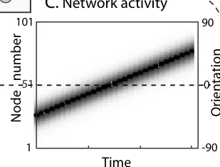
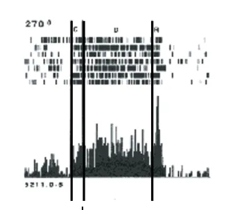
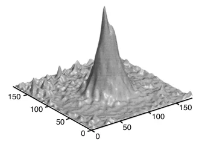
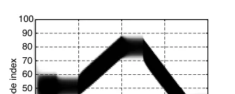
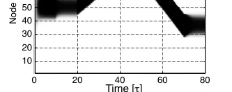

Phần III · Chương 8 — Bản đồ đặc trưng và mã hóa quần thể cạnh tranh
8 Bản đồ đặc trưng và mã hóa quần thể cạnh tranh
Chương này trình bày về việc biểu diễn thông tin bằng các bản đồ và về động lực học cạnh tranh trong mô thần kinh. Chương bắt đầu với phác thảo một mô hình cơ bản của siêu cột (hypercolumn), trong đó các neuron đáp ứng với đầu vào cảm giác cụ thể bằng các đường cong tinh chỉnh đặc trưng. Các đặc trưng như vậy thường được biểu diễn trong các bản đồ được tổ chức theo địa hình trong não. Chúng ta sẽ thảo luận cách các bản đồ đặc trưng địa hình như vậy có thể tự tổ chức. Sau đó, chúng ta nghiên cứu động lực học của việc kích hoạt các bản đồ đó và mô hình hóa quá trình này bằng lý thuyết trường thần kinh động. Chúng ta sẽ xem xét một số ví dụ cho thấy dấu hiệu của động lực học cạnh tranh xuất hiện ở nhiều vùng khác nhau trong não. Chương này cũng bao gồm một số thảo luận mang tính hình thức hơn về mã hóa quần thể, cũng như một số mở rộng của các mô hình cơ bản, bao gồm việc cập nhật động các biểu diễn bên trong thông qua tích phân đường đi.
8.1 Biểu diễn đặc trưng cạnh tranh trong mô vỏ não
Các neuron có thể biểu diễn đặc trưng bằng các đường cong tinh chỉnh thể hiện mức độ kích hoạt của chúng ứng với các giá trị đặc trưng khác nhau. Hơn nữa, các biểu diễn đặc trưng trong não thường được tổ chức theo địa hình, theo nghĩa là các giá trị đặc trưng lân cận được biểu diễn ở các vùng mô thần kinh liền kề nhau. Một ví dụ nổi tiếng là các đường cong tinh chỉnh hướng trong vỏ não thị giác sơ cấp, do Hubel và Wiesel phát hiện. Bây giờ chúng ta kết hợp các quan sát này vào một mô hình cơ bản của siêu cột. Mô hình này, được minh họa trong Hình 8.1A, bao gồm một dãy các nút quần thể, mỗi nút đáp ứng với một hướng cụ thể. Tính chọn lọc hướng này có thể đạt được bằng cách kết hợp đầu vào từ các tế bào chọn lọc không gian, như được chỉ ra đối với một số nút. Mô hình này triển khai một giả thuyết cụ thể về tổ chức vỏ não, cụ thể là đầu vào tới các tế bào chọn lọc hướng mang tính khu trú (focal), nghĩa là rất chọn lọc đối với một hướng cụ thể, và độ rộng của các đường cong tinh chỉnh chủ yếu là kết quả của các tương tác bên được biểu thị bằng các mũi tên trong mô hình.
Hình 8.1C là đồ thị thể hiện hoạt động của các nút trong một thí nghiệm cụ thể. Chúng tôi đã sử dụng 100 neuron quần thể cho minh họa này mà sau đây gọi là các nút, nhưng chúng ta sẽ thấy ở phần sau rằng số lượng nút này không mang tính quyết định. Mỗi nút tương ứng với một hướng nhất định được hiển thị theo thang độ ở bên phải. Trong thí nghiệm này, đáp ứng của các nút được thăm dò bằng cách kích hoạt từ bên ngoài một vùng rất nhỏ, một hàm Gauss hẹp về cơ bản chỉ bao phủ một nút, trong một khoảng thời gian ngắn. Sau khoảng thời gian này, nút tiếp theo được kích hoạt, thăm dò đáp ứng đối với các hướng liên tiếp trong suốt thí nghiệm. Các nút nhận đầu vào bên ngoài cho một hướng cụ thể trở nên rất tích cực. Tuy nhiên, các nút lân cận cũng được kích hoạt thông qua các tương tác bên
Fundamentals of Computational Neuroscience. Ấn bản lần thứ ba. Thomas P. Trappenberg, Oxford University Press. © Oxford University Press 2023. DOI:10.1093/oso/9780192869364.003.0008
A. Mô hình của một siêu cột
Siêu cột vỏ não
B. Đường cong tinh chỉnh
C. Hoạt động mạng

60
101
90
Tần số phát xung [Hz]
50
Số thứ tự nút
40
Hướng
30
51
0
20
10
0
Hướng [độ] -40 -20 0 20 40
1
-90
Thời gian
Hình 8.1 (A) Mô hình cơ bản của một siêu cột trong đó một dãy ngang gồm các nút được tổ chức theo địa hình để đáp ứng với các hướng cụ thể của các đoạn thẳng trong trường thị giác. (B) Dữ liệu thực nghiệm của Henry và cộng sự (1974), như đã thảo luận trong Mục 5.4, được thể hiện bằng các hình tròn đặc, trong khi các bản ghi từ mô hình được thể hiện bằng các ô vuông rỗng. (C) Sự tiến triển của hoạt động trong trường thần kinh trong suốt thí nghiệm.
trong mạng. Chúng ta gọi vùng hoạt động liên tiếp này là một gói hoạt động (activity packet), mặc dù nó thường được gọi đơn giản là một bong bóng (bubble). Mức kích hoạt của nút ở giữa, vốn đáp ứng cực đại với hướng không độ, được vẽ theo hướng đầu vào bằng các ô vuông rỗng trong Hình 8.1B. Các chấm tròn biểu diễn dữ liệu thực nghiệm tương ứng. Các mô phỏng cũng bao gồm nhiễu tỷ lệ với mức kích hoạt, không được hiển thị trong Hình 8.1C. Như có thể thấy, dữ liệu mô hình khớp khá tốt với dữ liệu thực nghiệm.
Một số giả định và giả thuyết cụ thể được tích hợp trong mô hình siêu cột cơ bản này. Cụ thể, chúng ta đã giả định trong mô hình này rằng sở thích hướng của các nút siêu cột được tổ chức một cách có hệ thống. Phần tiếp theo sẽ khám phá các cơ chế cơ bản dẫn đến những tổ chức như vậy. Các tương tác bên trong mô hình siêu cột được tổ chức sao cho có nhiều kích thích hơn tới các nút lân cận so với các nút ở xa hơn, và có sự ức chế giữa các nút ở xa hơn nữa. Tương tác bên này trong mô hình dẫn đến các tính chất động của mô hình, điều mà chúng ta sẽ nghiên cứu một cách hình thức hơn trong Mục 8.3. Sự cạnh tranh giữa các đặc trưng thường được quan sát thấy trong các nghiên cứu sinh lý học và có vô số hệ quả về mặt hành vi. Phần còn lại của chương này khám phá các ứng dụng và mở rộng khác nhau của những mô hình như vậy để chứng minh rằng mô hình này nắm bắt được các cơ chế xử lý cơ bản của não bộ.
8.2 Bản đồ tự tổ chức
Các bản đồ địa hình trong não có hai đặc điểm chính, đó là có một trật tự nhất định trong không gian đặc trưng sao cho các vùng lân cận biểu diễn các đặc trưng lân cận, và các đặc trưng có độ phân giải cảm giác cao hơn được biểu diễn quá mức với không gian vỏ não lớn hơn trong khi vẫn bảo toàn các mối quan hệ giữa các giá trị đặc trưng. Sự hình thành các tổ chức như vậy phụ thuộc vào kinh nghiệm, vì sự hình thành các bản đồ như vậy có thể bị gián đoạn ở động vật rất non do thiếu hụt cảm giác. Mặc dù sự hình thành các bản đồ này thường được xem là một quá trình phát triển, nhưng ngày càng có nhiều bằng chứng cho thấy các bản đồ vỏ não có thể thay đổi đáng kể ngay cả ở tuổi trưởng thành khi có cơ hội. Như đã thảo luận trong Chương 6, các mô hình tính dẻo Hebb trong cuốn sách này mô tả những thay đổi của giá trị trọng số synap nói chung và không phân biệt giữa tính dẻo phát triển và tính dẻo chức năng. Các mô hình trong tiểu mục này có thể được xem là các mô hình tổng quát cho những thay đổi cấu trúc do hoạt động thúc đẩy trong các bản đồ thần kinh, dù là trong quá trình phát triển hay ở giai đoạn sau trong cuộc đời của một sinh vật. Các bản đồ như vậy được gọi là bản đồ tự tổ chức (self-organizing maps), hay viết tắt là SOM.
Lưu ý rằng các mô hình được thảo luận ở đây dựa trên những thay đổi của đáp ứng neuron dựa trên tính dẻo Hebb và sự cạnh tranh tầm xa trong phiến vỏ não. Vẫn còn một số tranh luận về việc liệu các bản đồ địa hình tầm xa, chẳng hạn như hình người cảm giác thân thể (somatosensory homunculus) được minh họa trong Hình 1.7D, có thể được giải thích chỉ thông qua các cơ chế tổ chức synap hay không, vì người ta cũng biết rằng sự phát triển vỏ não được dẫn dắt bởi các chất hóa học ngoại bào. Do đó, có khả năng tính dẻo địa hình đang diễn ra cũng được dẫn dắt bởi các quá trình hóa học tương tự. Tuy nhiên, bất kể sự triển khai vật lý này là gì, các mô hình ở đây có thể được xem là một mức độ trừu tượng của tổ chức phụ thuộc vào hoạt động.
8.2.1 Mô hình bản đồ vỏ não cơ bản
Mô hình được mô tả ở đây dựa trên một bài báo kinh điển của David Willshaw và Christoph von der Malsburg vào năm 1976. Chúng ta xem xét một phiến vỏ não hai chiều, như được minh họa trong Hình 8.2A. Các nút trong phiến vỏ não này là các nút quần thể với động lực học tích phân rò rỉ (leaky integrator), như đã thảo luận trong Chương 5. Tuy nhiên, bây giờ chúng ta xem xét các nút này trong một mạng giống như một phiến thần kinh. Để đơn giản hóa ký hiệu, chúng ta viết các phương trình sau cho một mô hình một chiều với N nút, như minh họa trong Hình 8.2B. Việc tổng quát hóa mô hình lên hai hoặc nhiều chiều hơn là khá trực tiếp bằng cách sử dụng thêm các chỉ số (ví dụ: i →i1i2i3) hoặc coi chỉ số i là một vectơ (ví dụ: i →i). Sự thay đổi của mức kích hoạt bên trong, ui, của nút i được cho bởi:
τ dui(t)
dt = −ui(t) + 1 wijrj(t) + 1
X
X
win ikrin k (t), (8.1)
N
M
j k trong đó τ là hằng số thời gian, wij là trọng số bên từ nút j đến nút i, win ik là trọng số kết nối từ nút đầu vào k đến nút vỏ não i, rin k (t) là tần số của nút đầu vào k, và M là số lượng nút đầu vào. Hoạt động của các nút đầu vào biểu diễn các giá trị đặc trưng cụ thể, trong khi tần số ri(t) của nút vỏ não i liên quan đến mức kích hoạt bên trong thông qua một hàm kích hoạt. Trong chương này, chúng ta chủ yếu sử dụng hàm sigmoid, với tham số độ lợi β và tham số độ lệch α, rj(t) = 1 1 + eβ(uj(t)−α) . (8.2)
Phương trình 8.1 và 8.2 là những phương trình nền tảng nhất được sử dụng trong nhiều phần của cuốn sách này. Chúng được Stephen Grossberg giới thiệu ở dạng tổng quát hơn một chút vào cuối những năm 1950, và kể từ đó đã thống trị nhiều mô hình mạng thần kinh.
SOM của Willshaw - von der Malsburg A. Không gian đặc trưng 2D và tầng SOM B. Không gian đặc trưng 1D và tầng SOM wmnij wij w in jk w in ijkl r ij r in k rj r in kl
Hình 8.2 Kiến trúc của bản đồ tự tổ chức theo Willshaw và von der Malsburg trong (A) hai chiều và (B) một chiều. Tầng nút bên trái biểu diễn đầu vào và tầng bên phải biểu diễn phiến vỏ não.
Mô hình cơ bản được định nghĩa bởi các phương trình 8.1 và 8.2 phân biệt giữa hai tập giá trị trọng số: các giá trị trọng số của kết nối đầu vào, win ik, và các trọng số bên trong phiến vỏ não wij. Trong phần này, chúng ta quan tâm đến việc học ánh xạ địa hình giữa các nút đầu vào và đầu ra trong khi giữ cố định các trọng số bên. Việc học các trọng số bên sẽ được xem xét ở phần sau của chương này. Ở đây chúng ta thiết lập chúng chỉ phụ thuộc vào khoảng cách giữa hai nút, với các giá trị dương (kích thích) cho khoảng cách ngắn và các giá trị âm (ức chế) cho khoảng cách lớn. Cụ thể, chúng ta chọn một hàm Gauss dịch chuyển cho hầu hết các minh họa, e−((i−j)∗∆x)2/2σ2 −C
wij = Aw , (8.3)
với các tham số Aw, σ và C. Để giảm thiểu hiệu ứng biên, chúng ta xem xét mô hình với điều kiện biên tuần hoàn, sao cho các nút tạo thành một vòng tròn (hoặc một hình xuyến trong không gian nhiều chiều hơn).
Phần được xem xét tiếp theo là việc học các trọng số đầu vào, win. Chúng ta bắt đầu với một ma trận trọng số ngẫu nhiên sao cho chưa có trật tự cụ thể nào trước khi huấn luyện. Quá trình học tuân theo triết lý Hebb tổng quát. Một đặc trưng cụ thể được chọn ngẫu nhiên, và vùng tương ứng xung quanh giá trị đặc trưng này được kích hoạt trong bản đồ đầu vào. Hoạt động này kích hoạt một số đáp ứng trong bản đồ vỏ não, có khả năng ở nhiều vị trí khác nhau. Tuy nhiên, một đặc điểm quan trọng của động lực học trong phiến vỏ não với các trọng số bên đang xét là phiến này hoạt động như một dạng mạng kẻ thắng lấy tất cả (WTA) ở chỗ nó phát triển một gói hoạt động thống trị (như trong Hình 8.1C) thông qua hợp tác tầm ngắn và cạnh tranh tầm xa. Điều này sẽ được thảo luận chi tiết hơn trong Mục 8.3. Do đó, việc học Hebb đối với các tần số đầu vào dẫn đến sự gia tăng trọng số giữa các nút đầu vào được kích hoạt và gói hoạt động chiến thắng trong phiến vỏ não.
8.2.2 Mô hình Kohonen
Mặc dù Willshaw và von der Malsburg đã chứng minh rằng mô hình này dẫn đến các tổ chức địa hình, chúng ta sẽ minh họa điều này bằng một mô hình hiệu quả hơn nhiều do Teuvo Kohonen giới thiệu. Mô hình này thực hiện một số đơn giản hóa phù hợp cho các thảo luận tiếp theo và nhất quán với triết lý mô hình hóa tối giản của chúng ta. Đơn giản hóa đầu tiên là cách biểu diễn đặc trưng đầu vào được thay đổi. Trong khi một giá trị đặc trưng cụ thể được biểu diễn bằng sự kích hoạt của một nút cụ thể trong mô hình trước đó (ví dụ: bằng tọa độ của nút được kích hoạt), mô hình mới biểu diễn giá trị đặc trưng này dưới dạng giá trị kích hoạt của một nút trong mô hình một chiều, hoặc d nút đầu vào trong trường hợp d chiều. Phiên bản hai chiều của mô hình này được minh họa trong Hình 8.3A và phiên bản một chiều trong Hình 8.3B. Với cách biểu diễn đặc trưng này, các giá trị của kết nối đầu vào nên được hiểu là biểu diễn giá trị đặc trưng ưa thích (hướng ưa thích trong trường hợp các đường cong tinh chỉnh V1) của các nút tiếp nhận. Để chỉ ra cách diễn giải khác biệt này của các giá trị kết nối, chúng ta sử dụng chữ cái c cho các kết nối này (tâm của các đường cong tinh chỉnh). Khi đó, mức kích hoạt của phiến vỏ não, khi được kích hoạt với đầu vào rin, được cho bởi k(cijk−rin k )2/2σ2 r , (8.4)
rij = e−P trong đó σr thiết lập độ rộng của vùng được kích hoạt. Hàm kích hoạt này giống với các đường cong tinh chỉnh đã thảo luận ở trên, và các mạng có hàm kích hoạt như vậy được gọi là mạng hàm cơ sở xuyên tâm (radial-basis function - RBF).
Đơn giản hóa tiếp theo liên quan đến động lực học của phiến vỏ não hồi quy. Chúng ta đã đề cập rằng động lực học của mô hình dẫn đến các đáp ứng của phiến thần kinh dưới dạng một đường cong tinh chỉnh như minh họa trong Hình 8.1, ít nhất là trong tình huống đầu vào đơn đặc trưng. Cũng đã chỉ ra rằng vị trí của đường cong tinh chỉnh này được xác định bởi các cơ chế cạnh tranh. Vùng hoạt động mạnh nhất sẽ ức chế các hoạt động khác trong mạng. Do đó, động lực học trong phiến vỏ não được xấp xỉ bằng một quy trình WTA. Mức kích hoạt của phiến vỏ não sau cạnh tranh được đặt thành hàm Gauss (phương trình 8.4) xung quanh nút chiến thắng. Như vậy, chỉ vùng hoạt động xung quanh nút chiến thắng mới tham gia vào quá trình học Hebb như đã nêu ở trên. Việc học các phép chiếu đầu vào do đó nhằm mục đích làm cho đặc trưng ưa thích hiện tại của nút chiến thắng tiến gần hơn đến mẫu huấn luyện. Vì các nút lân cận trong phiến vỏ não cũng được kích hoạt, mặc dù ít hơn, các phép chiếu này cũng cập nhật theo cách tương tự, nhưng với mức độ ảnh hưởng ít hơn từ mẫu huấn luyện. Cụ thể, chúng ta sử dụng quy tắc học:
∆cijk = ϵr∗ ij(rin i −cijk), (8.5)
quy tắc này làm cho các kết nối tới các nút xung quanh nút chiến thắng (được gắn nhãn ‘∗’) trở nên giống hơn với mẫu đầu vào. Tham số ϵ chỉ định tốc độ học.
Sự phát triển tâm của các đường cong tinh chỉnh, cijk, trong một mạng như vậy với tầng vỏ não gồm 10 × 10 nút được minh họa trong Hình 8.4. Trong các hình này,
A. Không gian đặc trưng 2 chiều và tầng SOM B. Không gian đặc trưng 1 chiều và tầng SOM
WTA
WTA
c in c in ijk i r in
1 rij ri r in r in
2
Hình 8.3 Kiến trúc của bản đồ tự tổ chức theo Kohonen trong (A) hai chiều và (B) một chiều. WTA biểu diễn quy trình tìm nút có đáp ứng cực đại đối với một đặc trưng đầu vào cho trước.
A. Các tâm ngẫu nhiên ban đầu B. Sau 1000 bước huấn luyện C. Khuyết tật địa hình
0.6
1
1 cij2 cij2 cij2
0.5
0.5
0.5
0.4 0.5 0.6 0.4
0 0.5 1 0
0 0.5 1 0 cij1 cij1 cij1
Hình 8.4 Thí nghiệm với bản đồ đặc trưng tự tổ chức hai chiều. (A) Bản đồ ban đầu với các giá trị trọng số ngẫu nhiên. (B) và (C) Hai ví dụ về bản đồ đặc trưng thu được sau 500 mẫu huấn luyện ngẫu nhiên với các điều kiện ban đầu ngẫu nhiên khác nhau.
vị trí của các tâm trong không gian đặc trưng được vẽ cho mỗi nút dưới dạng giao điểm của các đường thẳng, trong đó các đường thẳng nối các nút lân cận trong phiến vỏ não. Các mô phỏng được bắt đầu với các giá trị ngẫu nhiên, như minh họa trong Hình 8.4A, sao cho không có mối quan hệ trật tự nào tồn tại. Sau đó, mạng được tiếp xúc với các mẫu ngẫu nhiên phân bố đều trong một hình vuông đơn vị. Sau một số mẫu huấn luyện, chúng ta thu được một biểu diễn tương đối đồng nhất của không gian đặc trưng như minh họa trong Hình 8.4B. Mạng đã học cách biểu diễn các giá trị đặc trưng của tập huấn luyện trong một bản đồ địa hình mà ở đó các nút lân cận biểu diễn các giá trị đặc trưng lân cận. Hình dạng của các bản đồ có thể khác nhau đáng kể tùy thuộc vào điều kiện ban đầu và trình tự chính xác của các mẫu. Trong Hình 8.4C, chúng tôi trình bày một ví dụ khác về cùng các mô phỏng đó với một trạng thái ban đầu khác. Một sự xoắn, hoặc nếp gấp, trong biểu diễn đã xảy ra khi các phần khác nhau của lưới bắt đầu tự tổ chức một cách độc lập. Những kết quả như vậy không phải là hiếm trong các mô phỏng. Chúng đôi khi được gọi là khuyết tật địa hình (topographic defects) và mang tính ổn định theo nghĩa gần như không thể tháo gỡ các nếp xoắn này. Tuy nhiên, có thể tránh được chúng bằng cách, chẳng hạn, sử dụng các giá trị σ lớn ngay từ đầu.
Một chương trình như som.py đã được sử dụng để tạo ra các đồ thị mô phỏng trong Hình 8.4. Như thường lệ, chúng ta định nghĩa một số hằng số ở đầu chương trình. Hằng số sig2 là ký hiệu viết tắt của mẫu số trong hàm mũ của phương trình 8.4. Việc định nghĩa các phép tính lặp lại như vậy bằng hằng số ở đầu chương trình là điều khôn ngoan để tiết kiệm thời gian tính toán quý giá về sau. Chúng ta cũng định nghĩa các ma trận hằng X và Y với sự trợ giúp của hàm meshgrid() trong numpy. X là ma trận chứa chỉ số ‘i’ của một nút, và Y là ma trận chứa chỉ số ‘j’ của một nút. Chúng ta sẽ cần điều này ở phần sau của chương trình để vẽ lưới.
Programs/som.py 1 # Two dimensional s e l f −o r g a n i z i n g f e a t u r e map a l l a Kohonen 2 import numpy as np 3 import m a t p l o t l i b . pyplot as p l t 4 5 nn = 10; l r = 0 . 0 2 ; s i g = 2; sig2 = 1/(2∗s i g ∗∗2); n t r i a l = 0 6 7 x , y = np . meshgrid ( np . arange (0 , nn ) , np . arange (0 , nn ) ) 8 9 # I n i t i a l c e n t r e s of p r e f e r e d f e a t u r e s : 10 c1=np . random . rand ( nn , nn ) 11 c2=np . random . rand ( nn , nn ) 12 #c1 =0.05+ x / nn 13 #c2 =0.05+ y / nn 14 # t r a i n i n g s e s s i o n 15 f o r t r i a l in range (1 0 0 0 0 ) : 16 i f ( np . mod( t r i a l , 1 0 0 ) = = 0 ) : # P l o t g r i d of f e a t u r e c e n t r e s 17 p l t . a x i s ( [ 0 , 1 , 0 , 1 ] ) ; 18 p l t . p l t ( c1 , c2 , ’k ’ ) ; p l t . p l t ( c1 . T , c2 . T , ’k ’ ) ; 19 p l t . show ( ) 20 21 r i n =[ np . random . rand ( ) , np . random . rand ( ) ] 22 r =np . exp (−(c1−r i n [0])∗∗2 −( c2−r i n [ 1 ] ) ∗∗2 ) 23 winner = np . u n r a v e l i n d e x ( np . argmax ( r , a x i s =None ) , r . shape ) 24 r =np . exp ( −((x−winner [0])∗∗2+( y−winner [1])∗∗2)∗sig2 ) ; 25 c1=c1+ l r ∗r ∗( r i n [1]−c1 ) 26 c2=c2+ l r ∗r ∗( r i n [0]−c2 )
Sau khi chọn các tâm ngẫu nhiên làm giá trị khởi đầu cho các kích thích ưa thích của các neuron, chúng ta thiết lập một vòng lặp dài để học. Trước khi huấn luyện, và sau mỗi 100 mẫu huấn luyện, được lập trình dưới dạng điều kiện với hàm mod() của numpy, chúng ta vẽ lưới bằng cách nối các nút lân cận. Sau đó chúng ta chọn một kích thích ngẫu nhiên và tính toán mức kích hoạt tương ứng của bản đồ vỏ não. Chúng ta không đưa số hạng phương sai vào dòng này vì mức kích hoạt tính ở đó chỉ dùng để tìm nút chiến thắng ở dòng tiếp theo. Mức kích hoạt của nút chiến thắng sau đó được tính chính xác ở dòng kế tiếp, rồi được dùng để cập nhật các tâm theo phương trình 8.5.
8.2.3 Tinh chỉnh liên tục các bản đồ vỏ não
Mỗi mẫu huấn luyện mới đều làm thay đổi bản đồ, và người ta thường phải đối mặt với điều mà Grossberg đặt tên là nghịch lý dẻo–ổn định (plasticity–stability dilemma), ở chỗ chúng ta muốn ổn định một bản đồ trong khi vẫn có thể phát triển bản đồ đó. Trong nhiều ứng dụng kỹ thuật, người ta bắt đầu huấn luyện với một tốc độ học lớn và giảm dần xuống các giá trị nhỏ. Điều này đôi khi được so sánh với các quá trình phát triển ở động vật có vú với những giai đoạn nhạy cảm (critical periods) ở thời kỳ đầu sau sinh. Tuy nhiên, não bộ cũng có khả năng thích nghi ở độ tuổi cao khi có cơ hội. Để minh họa điều này, chúng tôi trình bày một mô phỏng khác trong Hình 8.5.
Chúng tôi bắt đầu mạng này với các tâm được tổ chức hoàn hảo (xem đồ thị tại t = 0) để tránh các khuyết tật địa hình, vì ở đây chúng tôi không quan tâm đến tổ chức ban đầu mà quan tâm đến sự phát triển của các bản đồ khi đáp ứng với những tiếp xúc mới. Các tâm ban đầu có tổ chức, như minh họa trong hình, được tạo ra bằng:
for i in range(n_out)
for j in range(n_out)
c1[i,j]=i/n_out c2[i,j]=j/n_out Trong các bước thích nghi tiếp theo, mạng trước tiên được tiếp xúc với các vectơ huấn luyện ngẫu nhiên trong hình vuông đơn vị, như trước đây. Biểu diễn không thay đổi nhiều sau 1000 lần cập nhật; chỉ có một số biến dạng nhỏ được đưa vào do việc cập nhật ma trận trọng số với các mẫu huấn luyện. Sau 1000 mẫu huấn luyện, chúng tôi thay đổi các vectơ huấn luyện được đưa vào mạng. Các mẫu huấn luyện mới bao gồm các giá trị ngẫu nhiên tương tự như trước, và bổ sung thêm các mẫu huấn luyện với các thành phần 1 ≤rin i < 2, với các mẫu ngẫu nhiên từ mỗi trong hai góc phần tư. Kết quả mô phỏng sau 100 và 1000 lượt huấn luyện với các mẫu huấn luyện mới này được trình bày trong hai đồ thị cuối cùng của Hình 8.5. Bản đồ địa hình đã phân nhánh để vươn tới các biểu diễn của những giá trị đặc trưng bổ sung, mặc dù biểu diễn này không tốt bằng biểu diễn của tập huấn luyện ban đầu ngay cả sau một khoảng thời gian đáng kể.
Các mô phỏng trên chứng minh rằng các mạng SOM có thể học cách biểu diễn các miền giá trị đặc trưng mới, mặc dù biểu diễn dường như kém tinh vi hơn so với miền đặc trưng ban đầu. Kết quả mô phỏng dẫn đến một số kết luận thú vị nếu chúng ta suy đoán rằng sự hình thành biểu diễn vỏ não được thúc đẩy bởi các cơ chế tương tự. Ví dụ, tốt nhất là nên tiếp xúc sớm trong đời với các mẫu huấn luyện từ một không gian đặc trưng rộng, bao gồm các mẫu từ tất cả các đặc trưng mà chúng ta mong muốn có được một biểu diễn tinh vi. Điều này gợi ý rằng việc tiếp xúc với nhiều ngôn ngữ khác nhau từ sớm trong đời là rất quan trọng để có thể đạt được khả năng phân biệt âm thanh ở mức độ cao trong các ngôn ngữ khác nhau.
Dựa trên mô hình trên, chúng ta có thể đề xuất một số chiến lược huấn luyện hữu ích khi khám phá các miền mới. Có vẻ như có thể tạo ra một tập huấn luyện ‘thông minh’ giúp thích nghi với các biểu diễn mới tốt hơn nhiều so với một tập huấn luyện ngẫu nhiên. Qua đó, có thể sẽ có lợi nếu lúc đầu chỉ đưa vào các mẫu huấn luyện gần với miền đặc trưng đã học ban đầu và sau đó tăng dần sự khác biệt của các giá trị đặc trưng. Mô hình gợi ý rằng chúng ta có thể dịch chuyển và mở rộng toàn bộ biểu diễn đặc trưng theo cách này một cách mượt mà hơn nhiều so với trường hợp chúng ta thích nghi với một số trường hợp cực đoan trước tiên và khi đó chỉ còn lại một số lượng hạn chế các nút khả dụng
2 t = 0
1
1
0 1 2 0
0 1 2 0
C. Môi trường mới
2 t = 2000 D. Thêm kinh nghiệm
2 t = 1100
1
1
0 1 2 0
0 1 2 0
Hình 8.5 Một ví dụ khác về bản đồ đặc trưng tự tổ chức hai chiều. Trong ví dụ này, chúng tôi huấn luyện mạng trên 1000 mẫu huấn luyện ngẫu nhiên từ góc phần tư dưới bên trái. Các mẫu huấn luyện tiếp theo được chọn ngẫu nhiên từ góc phần tư dưới bên trái và trên bên phải. Tham số t chỉ định số lượng mẫu huấn luyện đã được đưa vào mạng.
để biểu diễn miền đặc trưng mới. Ngoài ra, việc hạn chế các mẫu từ những vùng đã được huấn luyện kỹ là có lợi, và thậm chí có thể là thiết yếu, để học tập hiệu quả. Có khả năng chúng ta có thể phát triển các liệu pháp điều trị tốt hơn trong phục hồi chức năng dựa trên những ý tưởng như vậy.
Một minh họa đẹp về tính dẻo biểu diễn ở động vật có vú trưởng thành được thể hiện trong Hình 8.6 từ các thí nghiệm của Xiaoming Zhou và Michael Merzenich. Họ nuôi chuột con trong một môi trường ồn ào làm suy giảm nghiêm trọng sự phát triển của tính tổ chức theo tần số âm (tonotopicity — biểu diễn có trật tự của các âm) trong vỏ não thính giác sơ cấp (A1), tình trạng này kéo dài đến tuổi trưởng thành. Một ví dụ về bản đồ như vậy ở một con chuột trưởng thành được trình bày trong Hình 8.6A. Các vùng gạch chéo biểu diễn các khu vực có các neuron thể hiện sự tinh chỉnh tần số thuần túy. Những con chuột này không thể phục hồi biểu diễn tần số âm bình thường trong A1 mặc dù chúng được kích thích ở tuổi trưởng thành bằng các âm thanh có tần số khác nhau. Tuy nhiên, khi chính các mẫu âm thanh đó được dùng để huấn luyện chuột trong một nhiệm vụ phân biệt, mà chúng phải giải quyết để nhận phần thưởng thức ăn, những con chuột bị suy giảm phát triển đã có thể phục hồi bản đồ tần số âm bình thường, như minh họa trong Hình 8.6B. Ví dụ này chứng minh rằng một số quá trình học tập hướng mục tiêu phải diễn ra ở động vật. Ngoài ra, các mô hình SOM truyền thống, như đã thảo luận trong phần này, hoàn toàn được dẫn dắt bởi dữ liệu đầu vào theo cách từ dưới lên (bottom-up), và không chắc các mô hình như vậy đủ để giải thích các kết quả thực nghiệm này. Do đó, xử lý từ trên xuống (top-down), chẳng hạn như sự dẫn dắt quá trình phát triển của các bản đồ cảm giác sớm bởi mục tiêu và sự chú ý, dường như rất quan trọng, và chúng ta sẽ quay lại
A. Chuột được kích thích thụ động B. Chuột được huấn luyện
32 kHz
8 kHz
2 kHz
Lưng (Dorsal)
Trước (Anterior) 1mm
Hình 8.6 (A) Bản đồ tần số trong vùng A1 của một con chuột bị suy giảm phát triển do được nuôi trong môi trường ồn ào. Các vùng gạch chéo chứa các neuron có khả năng tinh chỉnh tần số kém. (B) Bản đồ tần số âm của một con chuột trưởng thành đã phục hồi nhờ huấn luyện trên một nhiệm vụ phân biệt tần số. [Dữ liệu do Zhou và Merzenich cung cấp, Proceedings of the National Academy of Science USA 104: 15935–40 (2007)].
phần thảo luận về xử lý từ trên xuống trong các chương sau.
8.3 Lý thuyết trường thần kinh động
Bây giờ chúng ta chuyển sang vấn đề khác của các bản đồ vỏ não và, như chúng ta sẽ thấy, một số bản đồ dưới vỏ não, đó là động lực học của phiến vỏ não đối với một tổ chức địa hình cho trước. Phương trình động lực học thời gian liên tục đã được giới thiệu cho một tập hợp rời rạc các nút trong phương trình 8.1. Chúng ta đã nêu trong ví dụ về các đường cong tinh chỉnh hướng rằng số lượng nút không thực sự quan trọng miễn là có đủ số lượng nút để biểu diễn không gian đặc trưng với độ mịn thích hợp. Ngoài ra, đặc trưng ‘hướng’ thực chất là một biến liên tục, và nhiều khái niệm mà não bộ phải học cũng có bản chất liên tục. Thật vậy, các quá trình nhận thức hầu hết đều có bản chất liên tục trong không gian và thời gian, và mô hình sau đây rất thành công trong việc giải thích nhiều phát hiện về hành vi. Do đó, việc viết phương trình 8.1 dưới dạng liên tục trong không gian là điều tự nhiên và rất thuận tiện về mặt toán học, τ ∂u(x, t)
Z
w(x, y)r(y, t)dy + Iext(x, t) (8.6)
∂t = −u(x, t) + y r(x, t) = g(u(x, t)), (8.7)
với một hàm kích hoạt tổng quát g(u). Chúng ta đã thay thế đầu vào bên ngoài tới bản đồ này bằng một dạng tổng quát Iext(x, t), vì chúng ta sẽ chủ yếu nghiên cứu động lực học của trường thần kinh như một đầu vào được tổ chức theo địa hình. Chúng ta sử dụng thuật ngữ ‘trường thần kinh’ (neural field) vì các đại lượng u(x, t) và r(x, t) phụ thuộc vào các tọa độ không gian liên tục và được gọi là các trường trong vật lý. Chúng ta đã viết các phương trình cho các chiều không gian tùy ý, mặc dù chúng ta sẽ chủ yếu sử dụng phiên bản một chiều của mô hình này để đơn giản hóa các thảo luận. Trong một mô hình một chiều, chúng ta có thể thay thế các đại lượng vectơ x, y, u, r bằng các biến giá trị thực x, y, u, r. Chúng ta cũng sử dụng các điều kiện biên tuần hoàn để giảm thiểu hiệu ứng biên. Do đó, không gian đặc trưng về mặt hình thức là một vòng tròn trong một chiều, và chúng ta thường xuyên sử dụng các giá trị đặc trưng trong (0, 2π] cho mục đích minh họa. Khi triển khai mô hình để mô phỏng trên máy tính, chúng ta cần rời rạc hóa mô hình với:
x →i∆x (8.8) Z dx →∆x P . (8.9)
Chúng ta khôi phục lại mô hình rời rạc đã dùng ở trên, phương trình 8.1, khi xác định các tương ứng u(i∆x, t) = ui(t) và ∆x = 1/N. Lưu ý hệ số tỷ lệ trong phương trình cuối cùng, vốn rất dễ bị bỏ quên khi thay thế tích phân bằng tổng.
8.3.1 Nhân tương tác trung tâm–bao quanh
Chúng ta đã nghiên cứu việc huấn luyện các trọng số đầu vào cho một nhân tương tác cố định, w, trong phần trước. Bây giờ chúng ta thảo luận về sự hình thành của w với đầu vào địa hình cố định. Chúng ta sẽ sử dụng một ví dụ một chiều trong đó chúng ta gọi đặc trưng được biểu diễn bởi phiến vỏ não là ‘hướng đi’ (direction). Mỗi vị trí của phiến vỏ não biểu diễn một hướng đi cụ thể, nhưng nó cũng đáp ứng ở một mức độ nào đó với các hướng đi lân cận dưới dạng một hàm Gauss, r(x −xp) = e−(x−xp)2/2σr
2, (8.10)
trong đó xp là hướng đi ưa thích của một vị trí trong phiến vỏ não. Với các điều kiện biên tuần hoàn, chúng ta nên thay thế khoảng cách giữa x và xp bằng,
|x −xp| →min(|x −xp|, 2π −|x −xp). (8.11)
Bây giờ chúng ta sử dụng phiên bản liên tục của quy tắc học Hebb cơ bản (phương trình 6.10) để huấn luyện một nhân trọng số bằng không ban đầu trên một mẫu của mọi hướng đi có thể,
Z 2π
wE(x, y) =
0 r(x −xp)r(y −xp)dxp. (8.12)
Tích phân chập này bản thân nó là một hàm Gauss, wE(|x −y|) = Awe−(x−y)2/4σr
2, (8.13)
√
2 lớn hơn độ rộng của các mẫu huấn luyện, và một hệ số tỷ lệ, Aw, phụ thuộc vào độ mạnh của mẫu huấn luyện và tốc độ học. Nhân trọng số này chỉ là một hàm của khoảng cách giữa các nút và luôn dương (kích thích), do đó có nhãn E. Tuy nhiên, chúng ta cũng cần sự ức chế trong mạng. Vì vậy, chúng ta xem xét một nhóm các nút ức chế được kích hoạt bởi các kích thích hưng phấn trong mạng và ngược lại ức chế toàn cục trường thần kinh. Điều này có thể được đưa vào mạng bằng cách dịch chuyển nhân kích thích đi một lượng AwC, trong đó hằng số C mô tả lượng ức chế tương đối. Nhân trọng số cuối cùng có thể được viết dưới dạng phiên bản liên tục của phương trình 8.3, với độ rộng lớn hơn một hệ số
e−(x−y)2/4σ2 r −C w(|x −y|) = Aw
. (8.14)
Trong ví dụ này, chúng ta đã suy ra nhân trọng số Gauss từ việc huấn luyện một mạng hồi quy x
Hình 8.7 Minh họa một hàm mũ Mexico (Mexican-hat). Các dấu chéo biểu thị các giá trị được sử dụng trong phiên bản rời rạc của mô hình trường thần kinh động với các nút như được chỉ ra ở phía dưới.
một cách có hệ thống trên các mẫu huấn luyện có dạng Gauss. Tuy nhiên, hầu hết các hành vi được thảo luận sau đây cũng đúng đối với các mô hình được huấn luyện trên các dạng mẫu khác nhau, miễn là các hàm trọng số thu được chỉ phụ thuộc vào khoảng cách (bất biến dịch chuyển), và có kích thích tầm ngắn cùng ức chế tầm xa. Ví dụ, hàm mũ Mexico thường được sử dụng, có thể tính từ hiệu của hai hàm Gauss, được minh họa trong Hình 8.7. Hàm này rất giống với hàm Gauss dịch chuyển ở trên khi phạm vi của hàm mũ Mexico nằm trong cùng bậc độ lớn với các bản đồ vỏ não tuần hoàn được thảo luận ở đây.
Nhiều ví dụ sinh lý học gợi ý một cấu trúc tương tác hiệu quả, với kích thích tầm ngắn và ức chế tầm xa, trong não bộ. Bằng chứng như vậy đã ảnh hưởng đến, chẳng hạn, Cowan và Wilson khi nghiên cứu các mô hình tân vỏ não với cấu trúc tương tác như vậy vào năm 1973. Một ví dụ khác được tìm thấy ở lớp trung gian của gò trên (superior colliculus), một vùng não giữa đóng vai trò là trạm tích hợp quan trọng cho nhiều con đường vỏ não và dưới vỏ não dẫn hướng ánh nhìn. Một ví dụ về cấu trúc tương tác trong gò trên từ các bản ghi tế bào ở khỉ được trình bày trong Hình 8.8. Trong hình này, chúng tôi đã vẽ kết quả cho hai neuron mẫu. Hình vẽ cho thấy ảnh hưởng của hoạt động ở các phần khác của gò trên đối với hoạt động của từng neuron. Ảnh hưởng này có đặc điểm là kích thích tầm ngắn và ức chế tầm xa, và một mô hình gò trên dựa trên các đặc điểm này đã có thể tái tạo nhiều phát hiện về hành vi đối với sự biến thiên thời gian cần thiết để khởi phát một chuyển động mắt nhanh theo các điều kiện thực nghiệm khác nhau.
8.3.2 Trạng thái tiệm cận và động lực học của các trường thần kinh
Phiến vỏ não về mặt hình thức là một hệ thống động lực học (mạng hồi quy), và chúng ta có thể nghiên cứu các quỹ đạo và trạng thái tiệm cận trong không gian trạng thái của mạng, như sẽ được thực hiện một cách hình thức hơn bên dưới. Ở đây, chúng ta tóm tắt một số chế độ chính của các mô hình như vậy với sự hợp tác cục bộ và cạnh tranh toàn cục, vốn rất quan trọng trong các thảo luận tiếp theo. Các chế độ khác nhau này phụ thuộc vào mức độ ức chế trong mạng so với mức độ kích thích cục bộ:
1. Hoạt động tăng trưởng: Khi sự ức chế yếu so với sự kích thích giữa các nút lân cận, khiến mô hình bị chi phối bởi sự kích thích, động lực học của mô hình bị chi phối bởi hồi tiếp dương. Toàn bộ bản đồ cuối cùng sẽ trở nên tích cực trong chế độ này, điều mà do đó không mong muốn đối với các quá trình của não bộ.
ρw
1
0.8
0.6
0.4
0.2
0
−0.2
0 1 2 3 4 5 6 7
Khoảng cách [mm]
Hình 8.8 Dữ liệu từ các bản ghi tế bào ở gò trên của khỉ, cho thấy cường độ tương tác ρw giữa các tế bào trong cấu trúc não giữa này. Đường nét liền hiển thị phép đo tương ứng từ các mô phỏng của một mô hình CANN cho cấu trúc não này [từ Trappenberg và cộng sự, Journal of Cognitive Neuroscience 13: 256–71 (2001)].
2. Hoạt động suy giảm: Khi sự ức chế mạnh so với sự kích thích, thì động lực học của mô hình bị chi phối bởi hồi tiếp âm. Các neuron sẽ đáp ứng với đầu vào đủ mạnh, nhưng hoạt động của bản đồ suy giảm sau khi loại bỏ đầu vào bên ngoài. Tuy nhiên, chế độ này lại thú vị xét về mặt xử lý thông tin vì nó có thể tạo điều kiện cho sự cạnh tranh giữa các đầu vào bên ngoài.
3. Hoạt động ghi nhớ: Trong một khoảng ức chế trung gian, mà chúng ta sẽ xác định rõ hơn bên dưới, một vùng tích cực có thể ổn định trong bản đồ, ngay cả khi đầu vào bên ngoài bị loại bỏ. Do đó, chế độ này có thể biểu diễn ký ức về các giá trị đặc trưng thông qua hoạt động duy trì liên tục trong mạng.
Các chế độ này có thể dễ dàng được khám phá bằng số học với chương trình được trình bày chi tiết bên dưới. Một ví dụ về mô phỏng như vậy được thể hiện trong Hình 8.9A, nơi chúng tôi vẽ tần số phát xung của các nút trong một mạng gồm 100 nút theo thang độ xám trong suốt quá trình tiến triển của hệ thống theo thời gian. Tất cả các nút được khởi tạo với tần số phát xung trung bình, và một kích thích bên ngoài mạnh vào các nút số 40–50 được áp dụng tại thời điểm t = 0. Các nút được kích thích, cũng như một số nút lân cận với vị trí được kích thích, đáp ứng bằng sự gia tăng tần số phát xung do các trọng số kích thích tới các nút gần kề. Các nút ở xa vị trí được kích thích giảm tần số phát xung do sự ức chế. Như đã đề cập ở trên, chúng ta gọi tập hợp các nút tích cực so với tần số nền của chúng là một gói hoạt động (activity packet), nhưng trong một số tài liệu nó cũng được gọi là bong bóng (bubble), hoặc bướu (bump).
Kích thích bên ngoài được loại bỏ tại t = 10τ. Tần số phát xung tổng thể trong mạng giảm nhẹ sau khi loại bỏ kích thích bên ngoài này, và gói hoạt động trở nên thấp hơn và rộng hơn một chút. Tuy nhiên, hiệu ứng thú vị nhất là một nhóm các nút lân cận có cùng tâm với kích thích bên ngoài vẫn duy trì hoạt động một cách tiệm cận. Do đó, động lực học của phiến vỏ não có khả năng ghi nhớ một đặc trưng bằng hoạt động duy trì liên tục trong bản đồ vỏ não. Chúng ta sẽ lập luận bên dưới rằng điều này tương ứng với một dạng trí nhớ làm việc (working memory) như thấy trong dữ liệu sinh lý học. Gói hoạt động có thể được ổn định tại bất kỳ vị trí nào trong mạng tùy thuộc vào kích thích bên ngoài ban đầu. Do đó, điểm hút (attractor) là một đa tạp liên tục trong giới hạn trường thần kinh, và mô hình trường thần kinh động (DNF) đôi khi được gọi là mạng thần kinh hút liên tục
A. B.
Hồ sơ hoạt động tại t =20τ
1
Tần số Tần số
0.5
70
Số thứ tự nút
Kích thích bên ngoài
35
0 50 100 0
0 10 0.0
Số thứ tự nút
Thời gian[t]
Hình 8.9 A) Sự tiến triển theo thời gian của các tần số phát xung trong mô hình trường thần kinh động với 100 nút. Các đầu vào bên ngoài bằng nhau tới các nút 40–60 được áp dụng tại t = 0τ. Đầu vào bên ngoài này bị loại bỏ tại t = 10τ (các tham số của mô hình như trong chương trình dnf.py). B) Đường nét liền biểu diễn hồ sơ tần số phát xung của mô phỏng trong Hình 8.9 tại t = 20τ. Đường nét đứt thể hiện kết quả tương tự với trọng số tăng lên Aw = 10. Đường chấm biểu thị kết quả từ một gói hoạt động suy giảm với sự ức chế tăng lên (C = 0.7).
(CANN). Đây là một trường hợp đặc biệt của các mạng thần kinh hút (ANN) tổng quát hơn được thảo luận trong Chương 9. Một gói hoạt động mới có thể được thiết lập tại một vị trí mới bằng cách áp dụng một kích thích bên ngoài khác tập trung xung quanh một nút khác. Tuy nhiên, các nút được kích hoạt từ bên ngoài vẫn nhận hoạt động ức chế từ gói hoạt động kia trong mạng, và đầu vào bên ngoài phải có cường độ và thời lượng đủ lớn để đảm bảo rằng gói hoạt động mới trở nên thống trị trong mạng.
Hồ sơ tần số tại thời điểm t = 20τ được thể hiện bằng đường nét liền trong Hình 8.9B. Trong các mô phỏng này, chúng tôi đã sử dụng hằng số ức chế C = 0.5 và cường độ trọng số Aw = 4. Sử dụng cường độ trọng số lớn hơn, Aw = 10, dẫn đến một gói hoạt động cứng nhắc hơn với các ranh giới sắc nét hơn và tần số của các nút nằm sâu bên trong gói hoạt động gần đạt đến giới hạn tần số. Các hiệu ứng tương tự có thể thấy khi sử dụng độ lợi lớn hơn trong hàm kích hoạt sigmoid hoặc khi sử dụng ít sự ức chế hơn. Việc sử dụng các hàm ngưỡng làm hàm kích hoạt dẫn đến một hồ sơ tần số dạng hình hộp. Chúng ta sẽ tận dụng phát hiện này trong phần phân tích tiếp theo. Vùng tích cực suy giảm với các hằng số ức chế lớn, chẳng hạn như với C = 0.7 trong ví dụ. Tuy nhiên, quá trình suy giảm có thể mất một khoảng thời gian, do đó dấu vết của vùng được gợi lên vẫn có thể thấy tại t = 20τ, như được thể hiện bằng đường chấm trong Hình 8.9B.
Một triển khai của mô hình DNF bằng Python cho Hình 8.9 được cung cấp trong chương trình dnf.py. Ở đây chúng ta sử dụng bộ tích phân số được cung cấp trong SciPy như đã phác thảo trong Chương 3.4, trong đó chúng ta định nghĩa các phương trình động lực học trong hàm udot(). Sau đó, chúng ta định nghĩa các tham số bao gồm số lượng nút. Mặc dù chúng ta đặt số này là nn=100 trong ví dụ này, điều quan trọng là kết quả của chúng ta không phụ thuộc vào con số này, và nên kiểm tra xem kết quả mô phỏng có không đổi khi sử dụng một con số khác hay không (hãy thử nghiệm). Số lượng nút sẽ chỉ thay đổi độ phân giải trong không gian đặc trưng, dx. Biến sig ảnh hưởng đến độ lệch chuẩn của ma trận trọng số, và hằng số C thiết lập mức độ ức chế.
Programs/dnf.py
1 import numpy as np 2 import m a t p l o t l i b . pyplot as p l t 3 from m a t p l o t l i b import cm 4 from m a t p l o t l i b . t i c k e r import LinearLocator 5 from scipy . i n t e g r a t e import o d e i n t 6 7 def udot ( u , t , w, I e x t , dx , tau ) : 8 r =1/(1+ np . exp(−u ) ) 9 I i n t =w@r∗dx ; 10 r e t u r n tau ∗(−u+ I i n t + I e x t ) 11 12 # Parameters 13 nn = 100; dx = 2∗np . pi / nn ; s i g = 2∗np . pi / 1 0 ; C= 0 . 5 ; tau =1 14 15 # Tr a in i ng weight matrix with Hebbian l e a r n i n g and s c a l i n g 16 i = np . arange ( nn ) 17 pat = np . zeros ( ( nn , nn ) ) 18 f o r loc in range ( nn ) : 19 d i s = np . fmin ( abs ( i−loc ) , nn−abs ( i−loc ) ) 20 pat [ : , loc ] = np . exp (−( d i s ∗dx )∗∗2/(2∗s i g ∗∗2)) 21 w = pat@pat . T ; w = w/w[ 0 , 0 ] ; w = 4∗(w−C) 22 23 # Update with i n p u t ( c e n t r a l a c t i v a t i o n ) 24 I e x t = np . zeros ( nn ) ; I e x t [ i n t ( nn/2−nn / 1 0 ) : i n t ( nn /2+ nn / 1 0 ) ] = 1 25 t = np . arange (10) 26 u0 = np . zeros ( nn ) # I n i t i a l s t a t e 27 u = o d e i n t ( udot , u0 , t , args =(w, I e x t , dx , tau ) ) 28 29 # remove i n p u t 30 I e x t = np . zeros ( nn ) 31 t2 = np . arange (10 ,20) 32 u0 = u [ −1 ,:] # I n i t i a l s t a t e 33 u2 = o d e i n t ( udot , u0 , t2 , args =(w, I e x t , dx , tau ) ) 34 35 36 # p l o t r e s u l t s 37 fig , ax = p l t . s u b p l o t s ( subplot kw ={" p r o j e c t i o n " : "3d" }) 38 X = np . append ( t , t2 ) ; Z = np . append ( u , u2 , a x i s = 0) .T 39 Y = np . arange ( nn ) / nn∗2∗np . pi 40 X, Y = np . meshgrid (X, Y) 41 ax . p l o t s u r f a c e (X,Y, Z , cmap=cm . coolwarm , l i n e w i d t h =0 , a n t i a l i a s e d = False )
Việc thiết lập các thành phần một cách tường minh bằng một hàm như hiệu của hai hàm Gauss là phổ biến trong ứng dụng mô hình DNF. Tuy nhiên, trong ví dụ này chúng tôi chọn huấn luyện phần kích thích của ma trận trọng số bằng phương pháp học Hebb trên các mẫu Gauss. Ma trận mẫu pat chứa nn mẫu, mỗi mẫu là một hàm Gauss tập trung xung quanh một trong các nút trong mạng. Sau đó, chúng tôi sử dụng quy tắc học Hebb ở dạng ma trận (xem phương trình 6.21 và các bình luận tiếp theo) và chuẩn hóa theo phần tử cực đại (mỗi phần tử trên đường chéo đều bằng nhau và cực đại). Giá trị thu được sau đó được dịch chuyển bởi hằng số ức chế và lại được nhân tỷ lệ lên với hệ số 4. Hệ số tỷ lệ như vậy có thể liên quan đến tốc độ học hoặc các dạng chuẩn hóa khác.
Sau đó, chúng tôi bắt đầu thí nghiệm với đầu vào bên ngoài có các phần tử khác không cho 21 nút xung quanh nút trung tâm và cập nhật hoạt động bằng cách tích phân cho đến t = 10. Tiếp theo, chúng tôi loại bỏ đầu vào và tích phân thêm 10 bước thời gian nữa. Phần còn lại của mã nguồn cho thấy cách vẽ các trường thần kinh trong biểu đồ 3D.
8.3.3 Các ví dụ về biểu diễn cạnh tranh trong não bộ
A. Dữ liệu thực nghiệm từ các bản ghi vùng IT
40
Tần số phát xung [Hz] Tần số
30
20
10
0
0 0.8 1.6 2.4 3.2
Thời gian kể từ khi xuất hiện tín hiệu [s]
B. Mô phỏng trường thần kinh động
1
0.5
0
0 0.8 1.6 2.4 3.2
Thời gian kể từ khi xuất hiện tín hiệu [s]
Hình 8.10 (A) Ví dụ về đáp ứng của các neuron vùng IT từ các thí nghiệm của Chelazzi, Miller, Duncan và Desimone, Nature 363: 345–7 (1993). Đáp ứng với một vật thể ‘tốt’ được thể hiện bằng đường nét liền, đáp ứng với một vật thể ‘xấu’ được thể hiện bằng đường chấm. (B) Mô phỏng mô hình DNF với sự ức chế mạnh vừa phải. Đường nét liền là bản ghi từ vị trí ‘tốt’ ở trung tâm, đường chấm từ vị trí ‘xấu’ [để biết chi tiết, xem Trappenberg, trong Computational modelling in behavioural neuroscience, Heinke và Mavritsaki (chủ biên), Psychology Press (2009)].
Các đường cong tinh chỉnh được thảo luận trong Mục 8.1 chỉ hiển thị các đáp ứng cực đại của một neuron trong mỗi lần trình chiếu kích thích. Bây giờ chúng ta chuyển sang một số ví dụ khác từ các vùng não khác nhau để chứng minh rằng những cơ chế như vậy nắm bắt được các khía cạnh nền tảng của quá trình xử lý trong não.
Các vùng vỏ não bậc cao hơn biểu diễn những đặc trưng ngày càng phức tạp vượt ra ngoài tính chọn lọc hướng của các neuron V1, nhưng chúng ta vẫn có thể nghĩ về các biểu diễn này dưới dạng các trường thần kinh. Điểm khác biệt duy nhất là giá trị đặc trưng được biểu diễn (hướng trong V1) nên được thay thế bằng một giá trị đặc trưng khác mà vùng vỏ não khác đó đáp ứng. Tuy nhiên, các lập luận được thảo luận trong phần này không phụ thuộc cốt yếu vào lựa chọn đặc trưng miễn là các neuron cho thấy sự điều biến đáng kể theo các giá trị đặc trưng này. Lưu ý rằng chúng tôi không muốn để lại ấn tượng rằng các vùng vỏ não cụ thể chỉ xử lý các đặc trưng được chỉ định. Thật vậy, những đặc trưng này có phần thiên lệch bởi các điều kiện thực nghiệm. Ngay cả các neuron ở V1 cũng đáp ứng với các đặc trưng khác. Các ‘đặc trưng thực sự’ được xử lý trong một vùng vỏ não có thể là một sự pha trộn phức tạp của các đặc trưng được định nghĩa

a b c
Hình 8.11 Minh họa trí nhớ làm việc sinh lý thông qua việc duy trì hoạt động trễ trong các thí nghiệm sinh lý học. Một mục tiêu được trình chiếu giữa các thời điểm a và b, và vị trí của mục tiêu phải được ghi nhớ cho đến khi cần thực hiện hành động tại thời điểm c [chi tiết từ Funahashi, Bruce và Goldman-Rakic, Journal of Neurophysiology 61: 331–49 (1989)].
bởi người làm thí nghiệm.
Ví dụ, vỏ não thái dương dưới (IT) ở khỉ khá chọn lọc trong việc đáp ứng với các vật thể phức tạp cụ thể. Một số dữ liệu từ các bản ghi trong vùng này của Chelazzi và cộng sự được trình bày trong Hình 8.10A. Trong thí nghiệm của họ, họ cho khỉ xem các vật thể khác nhau và chọn các vật thể mà tế bào IT được ghi nhận đáp ứng mạnh (vật thể tốt) và yếu (vật thể xấu). Trong minh họa của Hình 8.10A, tần số phát xung trung bình của một tế bào IT đối với một kích thích tốt được thể hiện bằng đường nét liền. Khoảng thời gian khi kích thích gợi ý được trình chiếu được biểu thị bằng thanh màu xám trong hình này. Đáp ứng đối với một vật thể ‘xấu’ được minh họa trong hình bằng đường nét đứt. Thay vì tăng tần số trong suốt thời gian trình chiếu gợi ý, neuron này dường như đáp ứng với tần số phát xung thấp hơn tần số nền thông thường. Ở thời điểm sau đó, con khỉ được cho xem cả hai vật thể và được yêu cầu chọn vật thể đã được dùng làm gợi ý. Neuron IT ban đầu đáp ứng trong cả hai điều kiện, nhưng đáp ứng ở các giai đoạn sau lại khá khác biệt.
Một số khía cạnh của dữ liệu thực nghiệm được nắm bắt bởi các mô phỏng của mô hình DNF như minh họa trong Hình 8.10B. Đường nét liền biểu diễn hoạt động của một nút bên trong bong bóng đáp ứng của trường thần kinh. Trong các mô phỏng này, một hằng số ức chế khá lớn đã được sử dụng sao cho hoạt động suy giảm sau khi kích thích bên ngoài bị loại bỏ. Hoạt động của đường nét đứt tương ứng với hoạt động của một nút bên ngoài bong bóng hoạt động. Hoạt động của nút này bị suy yếu do sự ức chế bên trong suốt quá trình trình chiếu kích thích. Ngoài ra, khi cả hai vật thể được dùng làm đầu vào, hoạt động tại cả hai vị trí ban đầu sẽ tăng lên. Chỉ sau đó, gói hoạt động lớn hơn một chút, chẳng hạn như khi được mô hình hóa bằng sự hỗ trợ bổ sung từ trí nhớ làm việc, mới thống trị động lực học và chủ động ức chế gói hoạt động kia.
Một vấn đề quan trọng khác là việc chứng minh trí nhớ làm việc sinh lý bằng sự phát xung liên tục trong não. Việc duy trì hoạt động thần kinh trong một khoảng thời gian trễ đã được quan sát thấy qua thực nghiệm. Một ví dụ về thí nghiệm như vậy của Funahashi, Bruce và Goldman-Rakic được trình bày trong Hình 8.11. Các nhà nghiên cứu này đã huấn luyện một con khỉ giữ mắt nhìn vào một điểm cố định trung tâm cho đến khi có tín hiệu ‘thực hiện’ (go), chẳng hạn như một âm thanh, báo hiệu rằng nó nên di chuyển mắt và tập trung vào một trong số các mục tiêu khả dĩ ở ngoại vi

150 150
100 100 50 50 0 0
Hình 8.12 Đáp ứng của nhiều neuron hồi hải mã ở một loài gặm nhấm đáp ứng với vị trí (các nơi chốn) của đối tượng trong một mê cung. Hình vẽ cho thấy tần số phát xung của các neuron khi đáp ứng với một vị trí cụ thể, trong đó các neuron được sắp xếp trong hình sao cho các neuron có đặc tính đáp ứng tương tự được đặt liền kề nhau [Samsonowich và McNaughton, Journal of Neuroscience 17: 5900–20 (1997)].
điểm cố định. Lựa chọn mục tiêu mà mắt cần di chuyển tới trong mỗi lượt thử được chỉ báo bằng một tia sáng ngắn, nằm giữa hai vạch dọc đầu tiên trong hình, nhưng đối tượng không được phép di chuyển mắt cho đến khi có tín hiệu ‘thực hiện’ được chỉ báo bằng vạch dọc thứ ba trong hình. Do đó, vị trí mục tiêu cho mỗi lượt thử phải được ghi nhớ trong khoảng thời gian trễ. Các nhà thực nghiệm đã ghi nhận từ các neuron ở vỏ não trước trán lưng–bên (vùng 46) và tìm thấy các neuron hoạt động trong suốt khoảng thời gian trễ. Các neuron này nhạy cảm với hướng mục tiêu cụ thể (neuron được hiển thị chỉ đáp ứng khi mục tiêu ở góc 270 độ), và do đó neuron này có thể chỉ báo bằng hoạt động trễ của nó hướng mà mắt nên hướng tới sau khoảng thời gian trễ. Có thể hoạt động liên tục như vậy của các neuron được hỗ trợ bởi các cơ chế nội bào như sự kích hoạt các kênh ion có điện thế đảo ngược cao. Tuy nhiên, một lời giải thích phổ biến hơn là hoạt động trí nhớ làm việc như vậy được duy trì thông qua hoạt động thần kinh dội lại theo chiều ngang như được mô hình DNF nắm bắt. Mô hình này hấp dẫn vì nhiều lý do, chẳng hạn như khả năng mô phỏng các tương tác với những ký ức khác, như sẽ thảo luận sau.
Ví dụ cuối cùng minh họa các biểu diễn không gian trong vỏ não cổ (archicortex). Một số neuron trong hồi hải mã của chuột phát xung liên quan đến các vị trí cụ thể bên trong mê cung nơi chuột đang di chuyển tự do. Trong một số thí nghiệm
Vì các tế bào vị trí (place cells) hồi hải mã không biểu hiện tính đều đặn trong không gian vật lý của mô não, một mẫu kết nối được nối dây cứng (ví dụ: được mã hóa di truyền) có lẽ không được sử dụng trong cấu trúc này. Tuy nhiên, chúng ta đã thấy tính đều đặn trong các mô hình trên khi sắp xếp các nút theo các giá trị đặc trưng mà chúng biểu diễn. Việc phát hiện tổ chức này trong bản đồ chức năng lẽ ra đã rất khó khăn nếu không làm vậy. Điều này được minh họa trong Hình 8.13 với một ví dụ một chiều, nơi chúng tôi đã gắn nhãn các nút và chỉ ra cường độ tương đối của trọng số giữa các nút khác nhau bằng các đường thẳng có độ dày khác nhau, tương ứng với độ mạnh tương đối của các kết nối. Trước khi học, được minh họa trong Hình 8.13A, chúng ta có thể giả định rằng tất cả các nút đều có trọng số bằng nhau đối với nhau. Số chiều của mô hình này có thể được coi là cao khi chúng ta lấy số lượng láng giềng — số lượng nút mà mỗi nút được kết nối tương đối mạnh — làm thước đo. Khác với mô hình trước, chúng tôi đã gán ngẫu nhiên cho mỗi nút một hướng ưa thích nơi nó phát xung cực đại. Do đó, sau khi huấn luyện, chúng ta thu được các trọng số trong không gian ‘vật lý’ của các nút, như được chỉ ra trong Hình 8.13B, trông khá ngẫu nhiên. Trật tự trong tính kết nối chỉ trở nên rõ ràng khi cuối cùng chúng ta sắp xếp lại các nút sao cho các nút kết nối mạnh nằm liền kề nhau. Sau khi làm như vậy (Hình 8.13C), chúng ta thấy rằng nó có cấu trúc một chiều phản ánh cấu trúc một chiều của không gian đặc trưng đã được sử dụng để huấn luyện mạng này.
3 2 A. Kết nối đầy đủ B. Sau khi học C. Sau khi học (đã sắp xếp lại)
1 18 5
3 2 1 20 19
19 4 1 20 19
12
4
10
18
4
18
15
7
17
5
17
5
20
9
16
6
16
6
17
15
6
7
15
7
8
3 13 16 14 8 2 11
14 13 12 11 10 9
8
14 13 12 11 10 9
Hình 8.13 Một mô hình mạng hút liên kết hồi quy, nơi các nút được đặt tùy ý trong không gian vật lý trên một vòng tròn. Cường độ kết nối tương đối giữa các nút được biểu thị bằng độ dày của các đường nối giữa các nút. Mỗi nút đáp ứng trong quá trình học với một hồ sơ phát xung Gauss xung quanh kích thích làm hưng phấn nút đó cực đại. Mỗi nút được gán một tâm của trường tiếp nhận một cách ngẫu nhiên từ một nhóm các tâm bao phủ miền huấn luyện tuần hoàn. (A) Trước khi huấn luyện, tất cả các nút đều có trọng số tương đối giống nhau giữa chúng. (B) Sau khi huấn luyện, cấu trúc trọng số tương đối đã thay đổi, với một vài kết nối mạnh và một số kết nối yếu hơn. (C) Tính đều đặn của các tương tác có thể được bộc lộ bằng cách sắp xếp lại các nút sao cho các nút có kết nối mạnh nhất nằm liền kề nhau.
Chúng ta đã giảm số chiều của mạng ban đầu xuống thành một mẫu kết nối một chiều. Nếu chúng ta đã huấn luyện mạng ban đầu với các mẫu từ một không gian đặc trưng hai chiều, chúng ta sẽ tạo ra một cấu trúc hai chiều trong ma trận trọng số, mặc dù điều này có thể chỉ thấy được sau khi sắp xếp lại các nút cho phù hợp. Việc sắp xếp lại các nút mà chúng ta đã sử dụng tương đương với việc sắp xếp lại các neuron hồi hải mã đã thảo luận ở trên và giải thích tại sao phải làm điều này để thấy được ‘tính đều đặn’ trong mẫu phát xung. Từ đây chúng ta có thể thấy rằng mạng tự tổ chức để phản ánh số chiều của không gian đặc trưng. Mạng ‘khám phá’ ra số chiều của bài toán nền tảng từ sự đồng kích hoạt phụ thuộc hoạt động của các neuron, vốn là đặc trưng cơ bản của học tập Hebb, như đã thảo luận trong Chương 6.
Kích thước gói hoạt động ( )
x2−x1 π
0 0
1 0.2 0.4 0.6 0.8
C Hằng số ức chế
Hình 8.14 Kích thước của gói hoạt động theo hàm của hằng số ức chế C. Đường chấm tương ứng với các nghiệm của phương trình 8.17, trong khi đường nét liền hiển thị kết quả từ các mô phỏng.
8.3.4 Phân tích hình thức về các trạng thái hút ⋄
Mô hình trường thần kinh động ở dạng trình bày ở đây được Sun-ichi Amari giới thiệu vào năm 1977, khi ông cũng nghiên cứu chi tiết các nghiệm của những mô hình như vậy. Chúng ta sẽ theo đuổi một số ý tưởng cơ bản trong phân tích của ông tại đây. Để đơn giản, chúng ta giả định một hàm kích hoạt ngưỡng, g(x) = θ(x), làm cho tần số phát xung bên trong gói hoạt động bằng 1 trong khi đặt tần số phát xung bên ngoài gói hoạt động bằng 0. Như chúng ta sẽ thấy, lựa chọn này rất thuận tiện. Các kết quả với hàm kích hoạt ngưỡng là một phép xấp xỉ tốt cho các mạng có hàm kích hoạt mượt hơn, bởi vì các gói hoạt động có thể sắc nét ngay cả với một hàm kích hoạt sigmoid mượt. Hàm kích hoạt ngưỡng rất hữu ích vì trạng thái dừng (∂u/∂t = 0) của phương trình động lực học 8.6, không có đầu vào bên ngoài (Iext = 0), khi đó có thể viết thành:
Z x2
u(x) = w(x, y)dy, (8.15)
x1 trong đó x1 và x2 là các vị trí biên của gói hoạt động. Điều này phải đúng với mọi x, bao gồm cả các biên mà tại đó u(x1) = u(x2) = 0, sao cho phương trình sau đây cũng phải thỏa mãn,
Z x2
w(x1, y)dy = 0. (8.16)
x1
Đối với nhân trọng số Gauss, phương trình 8.14, phương trình trên có thể được giải bằng hàm sai số (xem phương trình 3.54),
√πσrerf(x2 −x1
2σr ) = C(x2 −x1). (8.17)
Phương trình này có thể được giải bằng phương pháp số và được minh họa trong Hình 8.14 dưới dạng đường chấm. Các mô phỏng tương ứng của mô hình DNF được hiển thị trong Hình 8.14 dưới dạng đường nét liền. Nghiệm giải tích mô tả khá tốt chế độ ổn định, nhưng hơi lệch so với các nghiệm số trong vùng chuyển tiếp giữa các chế độ khác nhau.
Còn tính ổn định của gói hoạt động đối với các chuyển động thì sao? Để trả lời câu hỏi này, chúng ta tính vận tốc của các biên. Một chuyển động của
A. Hai hàm Gauss
x 1 x 2
B. Gradient của gói hoạt động
Δx 1
x 2 Δ
Hình 8.15 (A) Hai đường cong chuông Gauss đặt tâm xung quanh hai giá trị khác nhau x1 và x2. Diện tích của vùng gạch sọc và vùng chấm là bằng nhau do tính đối xứng của đường cong chuông. Do đó, các tích phân từ x1 đến x2 trên hai đường cong khác nhau là bằng nhau. Điều này không đúng nếu hai đường cong không đối xứng và có hình dạng khác nhau. (B) Đường nét đứt phác thảo hình dạng của một gói hoạt động từ một mô phỏng. Tính đối xứng của gói hoạt động này làm cho các gradient ở hai biên bằng nhau ngoại trừ dấu.
gói hoạt động khi không có đầu vào bên ngoài chỉ có thể bắt nguồn từ các lực được tạo ra bởi chính hình dạng của gói hoạt động. Lực khi đó tỷ lệ thuận với gradient của gói hoạt động, và vận tốc là dx dt = −∆xdu dt , (8.18)
trong đó chúng ta đã tính đến khả năng phụ thuộc thời gian tường minh của gói hoạt động. Để có được vận tốc của các biên, chúng ta phải thay x = x1 hoặc x = x2 vào phương trình này. Sau đó chúng ta có thể thay phương trình 8.6 vào phương trình này để thu được công thức cho vận tốc của biên, hoặc tương tự cho tâm của gói hoạt động, xc(t) = 1
2(x1(t) + x2(t)), (8.19)
được cho bởi
Z x2
Z x2
dxc dt = − 1 2τ∆x1 w(x1, y)dy − 1 2τ∆x2 w(x2, y)dy. (8.20)
x1 x1
Biểu thức ở vế phải của phương trình bằng không khi hàm trọng số đối xứng và bất biến dịch chuyển, và các gradient của gói hoạt động tại các biên là giống nhau ngoại trừ dấu của chúng. Các điều kiện này được minh họa trong Hình 8.15. Đối với hàm trọng số Gauss, vốn đối xứng và bất biến dịch chuyển, chúng ta thấy rằng tích phân từ x1 đến x2 của hàm Gauss đặt tâm quanh x1 bằng với tích phân của hàm Gauss đặt tâm quanh x2. Ngoài ra, một khi chúng ta có một gói hoạt động đối xứng, rõ ràng là các gradient tại các biên bằng nhau ngoại trừ dấu, như minh họa trong Hình 8.15B. Vận tốc tâm của gói hoạt động đối với một hàm trọng số đối xứng do đó bằng không (dxc/dt = 0), và gói hoạt động giữ nguyên tâm xung quanh vị trí mà nó được khởi tạo.
Chúng ta đã chứng minh một cách hình thức rằng gói hoạt động trong các mô hình có ma trận trọng số bất biến dịch chuyển và đối xứng là ổn định. Phương trình 8.20 cũng cho chúng ta biết khi nào gói hoạt động không ổn định và do đó có thể bị trôi dạt (drift). Ví dụ, vận tốc tâm của gói hoạt động không bằng không khi tính bất biến dịch chuyển của ma trận trọng số bị phá vỡ. Ma trận trọng số được tạo ra bởi quá trình học Hebb trên các mẫu ngẫu nhiên, như sẽ thảo luận trong Chương 9, không bất biến dịch chuyển. Các mạng bộ nhớ liên kết như vậy do đó trôi dạt khỏi các điều kiện ban đầu hướng tới một điểm hút (point attractor), như sẽ thảo luận trong chương tiếp theo.
Một yếu tố quan trọng khác là nhiễu trong hệ thống, điều mà chúng ta luôn phải tính đến khi thảo luận về các cơ chế não bộ. Nhiễu phá vỡ tính đối xứng cũng như tính bất biến dịch chuyển của các hàm trọng số khi nhiễu là độc lập đối với từng thành phần của trọng số. Do đó, gói hoạt động trong các mạng như vậy trôi dạt về một số điểm nơi các lực dịch chuyển bù trừ cho nhau. Điều này dẫn đến sự phân cụm của các trạng thái cuối. Một ví dụ được trình bày trong Hình 8.16A. Mỗi đường cong trong đồ thị tương ứng với sự tiến triển theo thời gian của trọng tâm của gói hoạt động sau khi mạng được khởi tạo với một gói hoạt động đặt tâm xung quanh một nút khác nhau trong mạng. Sự trôi dạt do nhiễu gây ra này có một số hệ quả thú vị đối với các hoạt động trong não. Ví dụ, sự trôi dạt làm cho việc biểu diễn chính xác các vị trí trong một thời gian dài trở nên bất khả thi. Thật vậy, các thí nghiệm cho thấy cảm giác về phương hướng trong bóng tối giảm dần sau một khoảng thời gian. Lưu ý rằng sự trôi dạt của gói hoạt động do nhiễu giảm đi theo kích thước của hệ thống vì các thành phần nhiễu có thể triệt tiêu lẫn nhau khi hàm trọng số là kết quả tương tác của nhiều nút có nhiễu.
Một nguồn gây bất đối xứng khác trong hàm trọng số là việc huấn luyện mạng không đều hoặc từng phần. Trong các ví dụ trước, chúng ta luôn huấn luyện mạng trong cùng một khoảng thời gian, với các gói hoạt động đặt tâm tại mọi nút trong mạng. Điều này không chỉ đòi hỏi các phiên huấn luyện kéo dài, mà còn phi thực tế về mặt sinh học vì đối tượng sẽ phải khám phá một môi trường mới theo cách rất đều đặn. Tác động của việc huấn luyện từng phần được minh họa bằng các mô phỏng trong Hình 8.16B–D. Ở đó, chúng tôi đã huấn luyện mạng với các gói hoạt động chỉ đặt tâm xung quanh 10 nút khác nhau trong mạng. Một góc nhìn một phần của ma trận trọng số thu được được trình bày trong Hình 8.16B. Các giá trị của ma trận trọng số lớn nhất tại các vị trí đã được sử dụng để huấn luyện. Tâm của gói hoạt động với ma trận trọng số thu được, không bao gồm bất kỳ nhiễu nào, cũng cho thấy sự trôi dạt đối với các trạng thái ban đầu xung quanh các vị trí đã huấn luyện (Hình 8.16C). Đây là một mạng điểm hút, được thảo luận nhiều hơn trong chương tiếp theo. Lưu ý rằng các vị trí nằm chính xác ở giữa các vị trí đã huấn luyện cũng ổn định, nhưng chỉ ổn định biên duyên (marginally stable). Một độ lệch nhỏ sẽ dẫn đến sự trôi dạt về các vị trí đã huấn luyện.
Sự trôi dạt trong gói hoạt động có thể được ổn định hóa bằng một sự gia tăng nhỏ về tính dễ kích thích của các neuron một khi chúng vừa được kích hoạt gần đây. Điều này tương ứng với một tính phi tuyến phụ thuộc điện thế ở neuron hậu synap có thể giúp duy trì sự phát xung trong một mạng hồi quy. Các tính phi tuyến phụ thuộc điện thế như vậy, chẳng hạn, có thể được thực hiện bởi các thụ thể NMDA. Chúng ta đã đề cập trong Chương 4 rằng
10 20 30 40 50 60 70 80 90 100
wij
Số thứ tự nút
0 500 1000 1500 2000
i = j
Thời gian [τ ]
. D . C
Tâm khối của các gói hoạt động được huấn luyện trên 10 vị trí (có NMDA)
Tâm khối của các gói hoạt động được huấn luyện trên 10 vị trí
10 20 30 40 50 60 70 80 90 100
10 20 30 40 50 60 70 80 90 100
Số thứ tự nút
Số thứ tự nút
0 1000 2000 3000 4000
0 1000 2000 3000 4000
Thời gian [τ [ n a i g i ờ h T ] τ]
Hình 8.16 (A) Mô phỏng với ma trận trọng số có nhiễu: sự tiến triển theo thời gian của trọng tâm các gói hoạt động trong một mô hình DNF với 100 nút. Mô hình được huấn luyện với các gói hoạt động trên tất cả các vị trí có thể. Mỗi thành phần của ma trận trọng số thu được sau đó được tích chập với một lượng nhiễu. (B) Học không đều hoặc từng phần: góc nhìn một phần của ma trận trọng số thu được từ việc huấn luyện mạng với các gói hoạt động chỉ trên một vài vị trí. (C) Sự tiến triển theo thời gian của trọng tâm các gói hoạt động trong mô hình DNF với 100 nút sau khi huấn luyện mạng trên chỉ 10 vị trí khác nhau. (D) Ổn định hóa ‘NMDA’. Mạng được huấn luyện trên 10 vị trí được bổ sung thêm một cơ chế ổn định hóa giúp giảm ngưỡng phát xung của các neuron đang hoạt động.
các thụ thể NMDA bị chặn bởi các ion magiê khi neuron ở trạng thái nghỉ. Sự phong tỏa này được gỡ bỏ sau khi điện thế màng tăng lên. Do đó, chúng ta có thể kích thích neuron ở lần tiếp theo dễ dàng hơn nhiều, nếu thời gian cần thiết để chặn lại kênh dài hơn so với thời gian của xung điện tiếp theo đi tới.
Chúng ta có thể mô phỏng một tính phi tuyến phụ thuộc điện thế như vậy với hằng số thời gian tương đối dài bằng cách thay đổi ngưỡng trong hàm kích hoạt của các neuron mô hình. Trong các mô phỏng ở Hình 8.16D, chúng tôi đã thay đổi giá trị ngưỡng α từ giá trị α = 0 được dùng trong tất cả các mô phỏng trước đây xuống giá trị thấp hơn là α = 10 đối với các neuron vượt quá 50% tần số phát xung cực đại của chúng. Giá trị được đặt lại về α = 0 khi các neuron giảm xuống dưới ngưỡng 50% này. Thay đổi này trong các mô phỏng là đủ để tăng số lượng các điểm hút (xem Hình 8.16D), với hầu hết các trạng thái gần các vị trí đã huấn luyện đều ổn định. Chỉ các trạng thái ở xa vị trí đã huấn luyện mới trôi dạt ban đầu về trạng thái hút gần nhất. Việc tăng tính phi tuyến phụ thuộc điện thế sẽ làm cho nhiều trạng thái ổn định hơn. Tuy nhiên, chúng ta không muốn làm cho cơ chế này quá thống trị, vì nếu không chúng ta sẽ đánh mất bản chất cạnh tranh của mạng, vốn rất quan trọng đối với hầu hết các ứng dụng của các mô hình mạng này. Cho đến nay,
90 Quen thuộc Mới lạ
Tần số phát xung [xung/s]
60
30
0 90 180 270 360 0
Hướng đầu [độ]
Hình 8.17 Đáp ứng thực nghiệm của một neuron ở vùng dưới hồi hải mã (subiculum) của một loài gặm nhấm khi con vật quay đầu theo các hướng khác nhau [vẽ lại từ Golob và Taube, Journal of Neuroscience 19: 7198–211 (1999)].
chưa có sự xác minh thực nghiệm trực tiếp nào cho đề xuất này, nhưng một sự xác minh trực tiếp có thể thực hiện được bằng cách phong tỏa có chủ đích các thụ thể NMDA. Mô hình dự đoán rằng sự trôi dạt trong các gói hoạt động sẽ tăng lên, tương ứng với sự nhầm lẫn nhanh chóng về cảm giác phương hướng.
8.4 Tích phân ‘đường đi’ và quy tắc dấu vết Hebb ⋄
Con người thường có ở một mức độ nhất định cảm giác về phương hướng. Điều này gợi ý rằng chúng ta phải có một dạng biểu diễn không gian nào đó trong não. Cảm giác về phương hướng có thể được kiểm tra bằng một thí nghiệm đơn giản. Nếu một đối tượng được đặt trên một chiếc ghế xoay với mắt nhắm lại trong khi có người xoay đối tượng đi một góc nhất định, có thể thấy rằng dự đoán của đối tượng về hướng mới là khá chính xác. Điều này chứng minh hai vấn đề quan trọng: thứ nhất, chúng ta phải có một biểu diễn về hướng cơ thể hoặc hướng đầu, và thứ hai, chúng ta phải có một cơ chế để cập nhật thông tin này mà không cần các tín hiệu thị giác.
Chúng ta đã thấy rằng thông tin không gian được biểu diễn bằng các trường vị trí (place fields) trong hồi hải mã của chuột, và các thông tin không gian khác, chẳng hạn như hướng đầu, cũng có thể được tìm thấy ở đó và ở các vùng lân cận khác. Ví dụ, ở vùng dưới hồi hải mã của loài gặm nhấm, người ta phát hiện thấy sự phát xung của các neuron biểu diễn hướng mà con vật đang hướng tới. Một ví dụ được trình bày trong Hình 8.17 từ việc ghi nhận hoạt động của một tế bào khi con vật được xoay theo các hướng khác nhau. Đường nét liền biểu diễn đặc tính đáp ứng của neuron này trong một mê cung quen thuộc. Neuron phát xung cực đại đối với một hướng cụ thể và phát xung với tần số thấp hơn đối với các hướng xung quanh hướng ưa thích của neuron này. Đường cong được hiển thị là một đường cong tinh chỉnh của các biểu diễn hướng đầu trong vùng dưới hồi hải mã. Đường nét đứt biểu diễn các đặc tính hướng đầu mới của cùng neuron đó khi con vật được đặt vào một mê cung mới, xa lạ. Các đặc tính đáp ứng mới thông thường sẽ tương tự như trước đó, nghĩa là các tế bào hướng đầu cố gắng duy trì xấp xỉ các đặc tính đáp ứng của chúng đối với các hướng đầu cụ thể. Tuy nhiên, các kết quả được hiển thị lại được tạo ra trong các thí nghiệm với một con vật bị tổn thương vỏ não làm suy yếu khả năng duy trì các đặc tính đáp ứng sau khi con vật được chuyển sang một môi trường mới. Người ta đã chứng minh rằng các neuron hướng đầu tiếp tục phát xung trong bóng tối, đây là một ví dụ khác về trí nhớ làm việc sinh lý thông qua hoạt động thần kinh duy trì liên tục sau khi loại bỏ kích thích. Trong phần này, chúng ta thảo luận cách biểu diễn hướng đầu hiện tại có thể được cập nhật trong các mô hình DNF.
8.4.1 Tích phân đường đi với các nhân trọng số bất đối xứng
Một cách để cập nhật trạng thái được biểu diễn bởi một tầng DNF là áp dụng một kích thích bên ngoài vào một vị trí mới. Tất nhiên, điều này chỉ khả thi nếu chúng ta biết giá trị tuyệt đối cho vị trí mới, vốn phải được biểu diễn tường minh để chúng ta có thể áp dụng một kích thích bên ngoài tại vị trí tương ứng trong mạng. Tuy nhiên, một đối tượng có thể không có sẵn giá trị tuyệt đối như vậy, ví dụ khi xoay một đối tượng đang nhắm mắt. Điều này giống như việc chở một người bịt mắt đi quanh thành phố và sau một thời gian hỏi xem chúng ta đang ở đâu. Để giải quyết bài toán này, chúng ta phải ‘tính toán’ vị trí mới từ vị trí cũ và những thay đổi chúng ta đã thực hiện (thông tin vận tốc bao gồm xoay và tốc độ tiến tới) trong khoảng thời gian này. Phép ‘tính toán’ này được gọi là tích phân đường đi (path integration), và chúng ta sẽ sử dụng thuật ngữ này cho tình huống tổng quát là tính toán một biểu diễn trạng thái mới từ một biểu diễn trạng thái ban đầu cộng với các tín hiệu chỉ báo sự thay đổi của trạng thái.
Chúng ta đã thấy trong phần trước rằng sự bất đối xứng trong nhân trọng số ở các mô hình DNF dẫn đến sự chuyển động của gói hoạt động. Một đề xuất để giải quyết bài toán tích phân đường đi liên quan đến việc sử dụng sự bất đối xứng như vậy một cách có hệ thống. Để làm được điều này, chúng ta phải tìm cách liên hệ độ mạnh của sự bất đối xứng với vận tốc chuyển động. Một tín hiệu vận tốc có thể do chính đối tượng tạo ra, và chúng ta gọi thông tin như vậy là các tín hiệu tự sinh (idiothetic cues), trong đó ‘idiothetic’ có nghĩa là tự tạo ra. Ví dụ là các đầu vào từ hệ thống tiền đình ở động vật có vú, có thể tạo ra các tín hiệu chỉ báo sự xoay của đầu và phản hồi cảm thụ bản thể (proprioceptive) từ các cơ báo hiệu sự thay đổi vị trí của chúng. Những tín hiệu như vậy sẽ là đầu vào cho các mô hình tiếp theo của chúng ta, trong đó chúng ta sẽ lại tập trung vào hướng đầu làm ví dụ.
Một đề xuất về cách các tín hiệu vận tốc tự sinh có thể được sử dụng trong các mô hình DNF biểu diễn hướng đầu để cập nhật hệ thống được trình bày trong Hình 8.18. Để đơn giản, chúng tôi chỉ hiển thị ba nút của mạng hồi quy biểu diễn hướng đầu của một đối tượng, và chỉ đưa vào các kết nối bên (collateral) tới các nút lân cận. Ngoài các nút hướng đầu này, chúng tôi đưa vào hai nút khác (cũng có thể biểu diễn một tập hợp các neuron), mà chúng tôi gọi là các nút xoay (rotation nodes). Để đơn giản, chúng ta giả định rằng tần số phát xung của các nút này tỷ lệ thuận trực tiếp với vận tốc chuyển động của đầu. Ý tưởng chính đằng sau mô hình là các nút xoay này có thể điều biến độ mạnh của các kết nối bên giữa các nút DNF. Ảnh hưởng điều biến này làm cho nhân trọng số hiệu dụng bên trong mạng hút theo một hướng mạnh hơn hướng kia, do đó cho phép gói hoạt động di chuyển theo một hướng cụ thể với tốc độ được xác định bởi tần số phát xung của các nút xoay.
Tác động của hoạt động nút xoay lên mạng hút phải mang tính điều biến (tức là phép nhân) trái ngược với phép cộng, bởi vì trường hợp sau sẽ chỉ tạo ra một đầu vào bên ngoài bằng nhau cho tất cả các nút mà không thể làm dịch chuyển gói hoạt động. Tác động điều biến có thể, chẳng hạn, được thực hiện bằng các nút sigma–pi như đã giới thiệu trong Mục 5.6. Điều này, đến lượt nó, có một số cách triển khai khả dĩ ở cấp độ neuron. Đối với thảo luận sau đây, chỉ cần nghĩ về hai đầu tận cùng synap nằm gần nhau về mặt vật lý
(Các) nút xoay ngược chiều kim đồng hồ
(Các) nút xoay theo chiều kim đồng hồ
Các nút hướng đầu
Hình 8.18 Mô hình tích phân đường đi hiển thị một vài tế bào hướng đầu với các kết nối bên. Các nút xoay biểu diễn tập hợp các neuron báo hiệu vận tốc xoay tỷ lệ với mức độ hoạt động của chúng. Các sợi hướng tâm của tế bào xoay có thể điều biến các kết nối bên trong mạng hướng đầu, được ký hiệu bằng các synap nằm gần các synap của các kết nối bên. Mỗi tế bào xoay có thể tạo synap lên từng synap trong mạng hướng đầu. Sự phân tách các kết nối, như được biểu thị bằng các đường nét liền và nét đứt, được tự tổ chức trong quá trình học.
có thể tương tác để tạo ra các hiệu ứng điều biến phi tuyến như vậy.
8.4.2 Tự tổ chức của một mạng xoay
Vấn đề lớn chúng ta phải giải quyết để làm cho mô hình này trở nên thực tế về mặt sinh học là tìm cách tự tổ chức mạng. Nếu chúng ta chỉ giả định rằng các nút xoay điều biến tất cả các synap như nhau thì chúng ta không thể làm dịch chuyển gói hoạt động. Thay vào đó, mạng phải học rằng sự phát xung ở một nút xoay chỉ báo, chẳng hạn, chuyển động xoay theo chiều kim đồng hồ chỉ nên điều biến các ‘synap theo chiều kim đồng hồ’ thích hợp trong mạng. Do đó, mạng phải học rằng các synap chỉ có trọng số mạnh khi đáp ứng với các trọng số thích hợp trong mạng hồi quy, như được biểu thị bằng các đường nét liền trong Hình 8.18. Ảnh hưởng của các synap đối diện, được biểu thị bằng các đường nét đứt, ít nhất phải yếu hơn. Để đạt được điều này, chúng ta cần một quy tắc học có thể liên kết chuyển động gần đây của gói hoạt động với sự phát xung của nút xoay thích hợp. Vì vậy, chúng ta cần có một dấu vết (trace), hay ‘trí nhớ ngắn hạn’, trong các nút, liên quan đến chuyển động gần đây của gói hoạt động. Một ví dụ về số hạng dấu vết như vậy (được biểu thị bằng dấu gạch ngang trên tần số phát xung) là,
¯ri(t + 1) = (1 −η)¯ri(t) + ηri(t). (8.21)
Đây là phiên bản rời rạc của một bộ tích phân rò rỉ và cũng có thể được viết dưới dạng vi phân. Số hạng dấu vết này biểu diễn trung bình trượt của các lần phát xung gần đây, với một cửa sổ trượt hàm mũ có độ rộng được đặc trưng bởi tham số η. Dạng chính xác của số hạng dấu vết này không quá quan trọng đối với các cơ chế tiếp theo, và các số hạng dấu vết khác có thể được sử dụng. Với dấu vết này trong sự phát xung của các nút ở mạng hồi quy, chúng ta có thể liên kết sự đồng phát xung của các tế bào xoay với chuyển động của gói hoạt động trong mạng hồi quy. Các trọng số giữa các nút xoay (có chỉ số trên ‘rot’) và các synap trong mạng hồi quy (không có chỉ số trên) có thể được hình thành bằng một quy tắc Hebb, δwrot ijk = ϵri¯rjrrot k . (8.22)
Tham số ϵ, như thường lệ, là tốc độ học. Quy tắc này củng cố các trọng số giữa nút xoay và các synap thích hợp trong mạng hồi quy. Như trước đây, chúng ta có thể hình thành các trọng số này trong giai đoạn học nơi sự phát xung của các nút được xác định bởi sự phát xung của đầu vào bên ngoài. Giai đoạn học này tương ứng với việc đối tượng khám phá môi trường bằng các tín hiệu thị giác và mang tính dị liên kết (hetero-associative) theo nghĩa nó liên kết các trạng thái liên tiếp nhau trong quá trình học.
8.4.3 Cập nhật mạng sau khi học
Sau khi các trọng số đã được học, chúng ta có thể cập nhật hướng đầu của một đối tượng mà không cần đầu vào bên ngoài. Động lực học của mô hình được xác định bằng τ ∂h(x, t)
Z
weff(x, y, rrot)r(y, t)rrot
∂t = −h(x, t) + i (t)dy, (8.23)
y trong đó chỉ số i gắn nhãn cho nhóm các nút của tế bào xoay theo chiều kim đồng hồ hoặc ngược chiều kim đồng hồ. Ma trận trọng số weff phụ thuộc vào hoạt động của các nút xoay, và mô tả nhân trọng số hiệu dụng bên trong mạng hồi quy từ các kết nối bên và ảnh hưởng điều biến của các tín hiệu tự sinh. Bản chất điều biến của những ảnh hưởng này có thể, chẳng hạn, được biểu diễn bằng weff ij = (wij −c)(1 + wrot ijkrrot k ), (8.24)
mặc dù các dạng hàm điều biến khác là khả dĩ và nhìn chung dẫn đến các kết quả tương tự như những kết quả được nêu bên dưới.
Hành vi của mô hình khi được huấn luyện trên các mẫu của một lần xoay theo chiều kim đồng hồ và một lần xoay ngược chiều kim đồng hồ, chỉ với một tốc độ xoay duy nhất, được minh họa trong Hình 8.19. Một kích thích vị trí bên ngoài đã được áp dụng ban đầu trong 10τ để khởi tạo một gói hoạt động, và gói hoạt động này ổn định sau khi loại bỏ kích thích bên ngoài khi các nút xoay không hoạt động. Trong khoảng 20τ ≤t ≤40τ, chúng tôi áp dụng một hoạt động xoay theo chiều kim đồng hồ tương ứng với hoạt động đã dùng trong quá trình học. Gói hoạt động sau đó di chuyển theo chiều kim đồng hồ một cách tuyến tính trong khoảng thời gian này. Chuyển động dừng lại ngay lập tức sau khi sự phát xung của tế bào xoay bị triệt tiêu tại t = 40τ. Trong khoảng 50τ ≤t ≤70τ, chúng tôi áp dụng tần số phát xung ngược chiều kim đồng hồ của nút ngược chiều kim đồng hồ gấp đôi giá trị đã dùng trong quá trình học. Gói hoạt động di chuyển với tốc độ gần gấp đôi theo hướng ngược chiều kim đồng hồ, chứng minh rằng mạng có thể tổng quát hóa sang các tốc độ xoay khác.
Các ví dụ về hàm trọng số sau khi học được trình bày trong Hình 8.20. Đường nét liền biểu diễn các giá trị trọng số bên đối xứng w50,i giữa nút 50 và các nút khác trong mạng. Các trọng số xoay theo chiều kim đồng hồ wrot
50,i,1 được hiển thị dưới dạng đường nét đứt trong hình. Dạng hàm của chúng không đối xứng như kỳ vọng.

10 20 30 40 50 60 70 80 90 100
Chỉ số nút

0 20 40 60 80
Thời gian [τ]
Kích thích bên ngoài
r = 1 rot 1 r = 0 rot 2 r = 0 rot 1 r = 2 rot 2
Hình 8.19 Mô phỏng một mô hình DNF với các cơ chế cập nhật tự sinh. Gói hoạt động có thể được di chuyển bằng các đầu vào tự sinh theo chiều kim đồng hồ hoặc ngược chiều kim đồng hồ, tùy thuộc vào tần số phát xung của các tế bào xoay tương ứng. Các kích thích thực nghiệm được chỉ báo ở phía dưới.
30
20
10 w50,i
0
−10
−20
0 20 40 60 80 100 −30
Chỉ số nút i
Hình 8.20 Các hàm trọng số khác nhau từ nút 50 đến các nút khác trong mạng sau khi học. w, đường nét liền; wrot, đường nét đứt; weff, đường chấm.
Các trọng số xoay ngược chiều kim đồng hồ tương ứng wrot
50,i,2, không được hiển thị trong hình, là ảnh phản chiếu qua gương của đường nét đứt. Hàm trọng số hiệu dụng thu được (phương trình 8.24) được hiển thị dưới dạng đường chấm trong hình. Tất cả các ví dụ đều nằm trong một không gian đặc trưng có địa hình một chiều nội tại. Tuy nhiên, tích phân đường đi có thể đạt được theo những cách tương tự với các không gian đặc trưng ở số chiều cao hơn khi mạng tự tổ chức.
8.5 Biểu diễn phân tán và mã hóa quần thể
Chúng ta đã thảo luận trong chương này cách thông tin được biểu diễn trong các bản đồ vỏ não và một số bản đồ dưới vỏ não, và chúng ta sẽ kết thúc chương này bằng một thảo luận tổng quát hơn về mã hóa phân tán. Ở đây chúng ta xem xét rằng một kích thích được biểu diễn bởi một vectơ có các thành phần mang giá trị được cho bởi đáp ứng (chẳng hạn như tần số phát xung) của các neuron trong một vùng não. Khi đó chúng ta muốn biết có bao nhiêu thành phần được sử dụng tích cực để biểu diễn một kích thích trong não. Chúng ta có thể phân biệt sơ bộ ba lớp biểu diễn:
1. Biểu diễn cục bộ: Trong biểu diễn cục bộ, chỉ có một nút biểu diễn một kích thích ở chỗ chỉ có một nút hoạt động khi một kích thích cụ thể được trình chiếu. Một nút (hoặc neuron) đơn lẻ sẽ đủ để chỉ báo rằng một kích thích cụ thể đã xuất hiện. Các neuron có đặc điểm như vậy đã được gọi là tế bào chủ chốt (cardinal cells), tế bào giáo hoàng (pontifical cells), hoặc tế bào bà ngoại (grandmother cells). Một vectơ có độ dài N có thể biểu diễn N đặc trưng khác nhau với biểu diễn cục bộ như vậy. Số lượng kích thích có thể được mã hóa bởi một vectơ như vậy tăng tuyến tính theo số lượng thành phần (nút). Việc đọc ra kích thích nào đang được biểu diễn rất dễ dàng với biểu diễn cục bộ. Trong trường hợp các biểu diễn với các nút nhị phân chỉ ‘bật’ hoặc ‘tắt’, điều mà chúng ta sẽ thường xuyên xem xét sau này, chỉ có một nút ‘bật’ cho mỗi kích thích khả dĩ. 2. Biểu diễn phân tán hoàn toàn: Biểu diễn phân tán hoàn toàn có thể được xem là thái cực còn lại, so với biểu diễn cục bộ. Một kích thích được mã hóa bởi sự kết hợp hoạt động của tất cả các thành phần trong vectơ biểu diễn một kích thích. Trong trường hợp các nút nhị phân, chúng ta có thể nghĩ đến trường hợp xác suất mỗi nút bật hoặc tắt là bằng nhau (tức là 50%), sao cho số lượng nút hoạt động trung bình là 50%. Số lượng các kích thích khác nhau có thể được mã hóa bằng các vectơ như vậy tăng theo hàm mũ theo số lượng nút và do đó lớn hơn nhiều so với trường hợp biểu diễn cục bộ. Tuy nhiên, thông tin được lưu trữ trong một vectơ nút là như nhau, vì chúng luôn xác định duy nhất một kích thích. Một ưu điểm của biểu diễn như vậy là chúng ta có thể định nghĩa sự tương đồng của các kích thích bằng cách đếm xem có bao nhiêu thành phần của vectơ có giá trị tương tự nhau. Điều này rất quan trọng để xây dựng các liên kết. 3. Biểu diễn phân tán thưa: Có phần giống một sự dung hòa giữa hai biểu diễn trên là biểu diễn phân tán thưa (sparsely distributed representation). Trong sơ đồ này, chỉ một phần nhỏ các thành phần (nút) của một vectơ tham gia vào việc biểu diễn một kích thích nhất định. Số lượng kích thích có thể được biểu diễn bởi một vectơ có độ dài N khi đó nằm đâu đó ở giữa hai trường hợp trên. Lưu ý rằng hàm lượng thông tin phải giống nhau trong mọi trường hợp vì thông tin không thể thay đổi theo biểu diễn bên trong miễn là biểu diễn đó bảo toàn thông tin; chỉ có hàm lượng thông tin của mỗi nút là khác nhau. Trong trường hợp các vectơ nhị phân, chúng ta sẽ có xác suất một nút ‘tắt’ lớn hơn so với xác suất các nút ‘bật’.
8.5.1 Độ thưa
Để xác định một cách định lượng hơn xem có bao nhiêu (hoặc bao nhiêu phần trăm) neuron tham gia vào quá trình xử lý thần kinh của từng kích thích riêng lẻ, chúng ta định nghĩa ở đây một thước đo độ thưa (sparseness) của một biểu diễn. Một định nghĩa là hiển nhiên trong trường hợp các nút nhị phân. Nếu chúng ta xem xét các neuron (hoặc nút quần thể) hoặc đang hoạt động (r = 1) hoặc không (r = 0), thì số lượng nút trung bình đang hoạt động đối với một tập hợp các kích thích là a = 1
1 N
X
X
rs i , (8.25)
S
s i trong đó S là số lượng kích thích mà độ thưa được đánh giá trên đó, và N là số lượng neuron trong quần thể đang xét. Nói cách khác, nếu chúng ta xem xét các tần số phát xung tương đối r bằng 0 nếu neuron không đáp ứng hoặc 1 nếu nó đáp ứng, thì độ thưa của biểu diễn với các nút nhị phân được định nghĩa là
nơi giá trị trung bình được lấy trên số lượng neuron trong quần thể và số lượng kích thích trong tập kiểm tra. Một biểu diễn nhị phân phân tán hoàn toàn theo định nghĩa này có độ thưa a = 0.5, và độ thưa của các biểu diễn phân tán thưa sẽ nhỏ hơn nếu chúng ta giới hạn ở trường hợp số lượng nút bật nhỏ hơn N/2. Lưu ý rằng trường hợp ngược lại là có nhiều nút bật hơn nút tắt có thể được ánh xạ về trường hợp trước bằng cách định nghĩa lại các giá trị cho biểu diễn bật và tắt.
Định nghĩa độ thưa trong trường hợp các vectơ có thành phần liên tục (giá trị thực) không rõ ràng như vậy. Khi đó chúng ta phải quyết định đặt bao nhiêu trọng số lên đóng góp của các tần số phát xung nhỏ so với lớn. Điều chúng ta muốn làm là lấy thông tin trong tần số phát xung làm hệ số trọng số, điều đó có nghĩa là chúng ta nên tính đến tần số phát xung tương đối so với phương sai của tần số phát xung. Do đó, chúng ta định nghĩa độ thưa của một biểu diễn, một lần nữa được định nghĩa là giá trị trung bình trên một tập hợp các kích thích, là a = ⟨rs i ⟩2 i,s ⟨(rs
. (8.27)
i )2⟩i,s
Ví dụ, chúng ta có thể đo tần số phát xung của N neuron khi đáp ứng với một tập hợp S kích thích và ước lượng độ thưa là a = ( 1
1 N i rs i )2
P
P
s
S
i )2 . (8.28)
1 S
1 N i(rs
P
P
s
Các định nghĩa 8.25 và 8.27 tương đương nhau trong trường hợp các vectơ nhị phân có thành phần mang giá trị 0 và 1. Độ thưa của mã hóa với các đường cong tinh chỉnh, như được mô hình hóa bởi các mô hình DNF, có thể được tính từ kích thước của gói hoạt động. Ví dụ, độ thưa của các trạng thái cuối trong mô phỏng của Hình 8.9 là a = 0.56. Do đó, các đường cong tinh chỉnh hướng trong V1 chỉ ra một biểu diễn phân tán mạnh mẽ trong một siêu cột. Tuy nhiên, chúng ta sẽ thấy rằng một số vùng não, đặc biệt là hồi hải mã, vốn được thảo luận nhiều hơn trong chương tiếp theo, được cho là có các biểu diễn thưa hơn nhiều.
8.5.2 Mã hóa quần thể xác suất
Chúng ta kỳ vọng rằng thông tin về thế giới bên ngoài và quá trình xử lý thông tin được phân tán trong não, nhưng biểu diễn này có thể rất nhiễu do bản chất ngẫu nhiên của các hoạt động thần kinh, như đã thảo luận trong Chương 5. Ở đây chúng ta thảo luận về mã hóa xác suất, cách thức cụ thể mà một kích thích được mã hóa trong một neuron hoặc một quần thể neuron, và giải mã, cách một thông điệp có thể được đọc từ các đáp ứng của một neuron hoặc một quần thể neuron. Chúng ta có thể biểu diễn việc mã hóa một mẫu kích thích theo xác suất đáp ứng của các neuron trong một quần thể bằng một phân phối xác suất đồng thời của các đáp ứng thần kinh có điều kiện theo một kích thích s,
P(r|s) = P(rs
1, rs 2, rs 3, ...|s), (8.29)
trong đó rs i là đáp ứng đặc hiệu cho kích thích của neuron i trong quần thể. Ở đây chúng ta chủ yếu xem xét các tần số phát xung đặc hiệu cho kích thích làm đáp ứng, mặc dù các đại lượng đáp ứng khác như độ trễ phát xung có thể được xử lý trong cùng một khuôn khổ. Chúng ta sử dụng ký hiệu P với nghĩa là xác suất đối với các biến ngẫu nhiên rời rạc hoặc mật độ xác suất trong trường hợp các biến ngẫu nhiên liên tục.
Giải mã (decoding) là phép nghịch đảo của mã hóa, nghĩa là chúng ta muốn suy ra kích thích nào đã được trình chiếu từ các đáp ứng thần kinh của một neuron hoặc một quần thể neuron. Việc giải mã hoạt động não gần đây đã trở nên rất được quan tâm trong các giao diện não–máy tính (BCI), và não bộ có thể phải thực hiện những tính toán như vậy ở một số giai đoạn. Xác suất một kích thích đã xuất hiện, khi biết một mẫu đáp ứng nhất định của các neuron trong quần thể, được biểu thị bởi xác suất có điều kiện
P(s|r) = P(s|rs
1, rs 2, rs 3, ...). (8.30)
Nếu biết xác suất có điều kiện này, chúng ta có thể nói kích thích nào có khả năng xuất hiện cao nhất khi cho trước một đáp ứng nhất định của quần thể neuron. Hiển nhiên là nên chọn kích thích có khả năng cao nhất làm câu trả lời cho bài toán giải mã, s P(s|r), (8.31)
ˆs = arg max trong đó ˆs là ước lượng của chúng ta về kích thích và arg max f(x) là hàm chọn đối số x làm cực đại hóa biểu thức f(x). Chúng ta có thể ước lượng các xác suất có điều kiện P(r|s) từ các bản ghi tế bào như đã nêu ở trên, nhưng chúng ta lại cần xác suất có điều kiện P(s|r). Tuy nhiên, hai xác suất có điều kiện này liên hệ với nhau thông qua đẳng thức gọi là định lý Bayes.
P(s|r) = P(r|s)P(s)
P(r) . (8.32)
Định lý này quan trọng vì nó cho chúng ta biết cách kết hợp kiến thức tiên nghiệm, chẳng hạn như phân phối kỳ vọng của các kích thích, P(s), với một số bằng chứng được đo bằng P(r|s), để thu được phân phối hậu nghiệm P(s|r) mà từ đó ước lượng tối ưu (theo nghĩa thống kê) của kích thích có thể được tính bằng phương trình 8.31. Lưu ý rằng trong tài liệu đôi khi có những thảo luận và phê bình về ‘quan điểm Bayes’. Điều này đề cập đến một cuộc thảo luận mang tính triết học hơn về việc sử dụng lý thuyết xác suất để mô tả các thí nghiệm với các cơ chế nền tảng được cho là có bản chất tất định. Ngược lại, định lý Bayes là một đẳng thức trong lý thuyết xác suất (hoặc lý thuyết tập hợp) và không bị các nhà thống kê nghi ngờ.
P(r) là phép chuẩn hóa thích hợp sao cho vế trái lại là một xác suất. Để sử dụng định lý, chúng ta cần có một ước lượng về tiền nghiệm P(s) và bằng chứng P(r|s). Phép chuẩn hóa không cần thiết nếu chúng ta chỉ quan tâm đến việc tìm kích thích có khả năng cao nhất. Hãy xem xét trường hợp các kích thích có khả năng xảy ra như nhau. Khi đó chúng ta cần ước lượng xác suất P(r|s). Tuy nhiên, đây chính là thứ được cho bởi các đường cong tinh chỉnh.
Thật vậy, chúng ta có thể xem đại lượng này như một hàm của kích thích. Khi coi hàm xác suất như một hàm của kích thích, điều thường được thực hiện bằng cách xây dựng một mô hình (giả thuyết) cụ thể về đáp ứng, hàm này khi đó được gọi là hàm hợp lý (likelihood function). Vì vậy, chúng ta có thể hỏi kích thích cảm giác nào mang lại độ hợp lý cực đại của dữ liệu, s P(r|s), (8.33)
ˆsML = arg max được gọi là ước lượng hợp lý cực đại (maximum likelihood estimate). Trong thực tế, chúng ta chủ yếu cực đại hóa logarit của độ hợp lý vì xác suất đồng thời của các biến độc lập có thể được biểu diễn thành tích của các xác suất biên của chúng. Logarit của một tích là tổng logarit của từng số hạng riêng lẻ. Một tổng như vậy thường dễ tính toán hơn. Ngoài ra, lưu ý rằng khi phải tính đến tiền nghiệm, chúng ta cần sử dụng định lý Bayes để tính phân phối hậu nghiệm cực đại (MAP; phương trình 8.31) nhằm ước lượng kích thích có khả năng nhất gây ra đáp ứng thần kinh.
Tầm quan trọng của ước lượng hợp lý cực đại trong thống kê là ở chỗ nó là một ước lượng không chệch (unbiased estimate), tức là một ước lượng có giá trị kỳ vọng (trung bình) bằng đúng tham số thực, E(ˆsML = s). Hơn nữa, phương sai của ước lượng này là tối ưu theo nghĩa nó tiến tới phương sai nhỏ nhất có thể được cho bởi cận Cramér–Rao,
= 1 (ˆsML −s)2
E
, (8.34)
IF
trong đó IF là thông tin Fisher p(r|s)( d
Z
ds ln p(r|s))2ds. (8.35)
IF = −
Ước lượng hợp lý cực đại do đó có thể cung cấp một số ước lượng hợp lý với các tập dữ liệu hạn chế.
8.5.3 Giải mã tối ưu với các đường cong tinh chỉnh
Các đường cong tinh chỉnh thường được suy ra từ các đáp ứng trung bình của neuron đối với nhiều kích thích khác nhau, và những đường cong này cung cấp một ước lượng về hàm hợp lý. Chúng ta sử dụng lại các đường cong tinh chỉnh Gauss fi(s), ri = fi(s) = e−(s−spref i )2/2σ2 tc, (8.36)
với độ rộng σtc, và trong đó spref i là kích thích ưa thích của nút này. Một ví dụ được cung cấp trong Hình 8.21A. Lưu ý rằng chúng ta không thể xác định giá trị đặc trưng của kích thích từ tần số phát xung của một neuron một cách không mơ hồ bởi vì một tần số phát xung nhất định có thể là kết quả của hai kích thích khác nhau. Tuy nhiên, sự mơ hồ này được loại bỏ trong một mã quần thể. Một neuron thứ hai có đường cong tinh chỉnh bị dịch chuyển, được minh họa trong Hình 8.21B, có thể giải quyết sự mơ hồ. Trong ví dụ minh họa, tần số phát xung của neuron cao hơn trong trường hợp kích thích thực sự tương ứng với nghiệm bên phải so với phương án thay thế. Cũng lưu ý rằng độ chính xác của việc giải mã có thể khác nhau đối với các giá trị khác nhau của giá trị đặc trưng kích thích s. Độ phân giải tốt có thể đạt được tại nơi đường cong tinh chỉnh thay đổi nhiều nhất theo giá trị đặc trưng kích thích s, xung quanh hướng ưa thích
Tần số phát xung
Tần số phát xung
Giá trị đặc trưng s (ví dụ: hướng)
Giá trị đặc trưng s (ví dụ: hướng)
Hình 8.21 Các đường cong tinh chỉnh Gauss biểu diễn tần số phát xung của một neuron theo hàm của một đặc trưng kích thích. (A) Một neuron đơn lẻ không thể giải mã một cách không mơ hồ đặc trưng kích thích từ tần số phát xung. (B) Một neuron thứ hai có đường cong tinh chỉnh dịch chuyển có thể giải quyết sự mơ hồ.
độ dốc lớn nhất của đường cong tinh chỉnh, max(f ′(s)), chứ không phải tại cực đại. Tuy nhiên, với dữ liệu có nhiễu, chúng ta cũng phải tính đến tỷ lệ tín hiệu trên nhiễu, vốn có thể cao nhất tại tâm của các đường cong tinh chỉnh.
Sau đây chúng ta sẽ giả định rằng các dao động đáp ứng của các neuron xung quanh hồ sơ đáp ứng trung bình này là độc lập, sao cho xác suất có điều kiện P(r|s) có thể được viết thành tích các xác suất có điều kiện của từng neuron riêng lẻ,
Y
P(r|s) =
P(ri|s). (8.37)
i
Đây được gọi là giả định Bayes ngây thơ (naive Bayes). Chúng ta vẫn chưa biết các mật độ xác suất riêng lẻ và phải đoán điều này. Vì chúng ta đã ước lượng các đường cong tinh chỉnh từ các đáp ứng trung bình, và vì trung bình của các số ngẫu nhiên có xu hướng phân bố Gauss (theo định lý giới hạn trung tâm), chúng ta sử dụng
P(ri|s) = 1 √
2πσi e−(ri−fi(s))2/2σ2 i , (8.38)
chúng ta có thể tính hàm log-hợp lý bằng cách lấy logarit của biểu thức này và xem nó như một hàm của s. Bộ ước lượng hợp lý cực đại do đó có thể được trích xuất trong tình huống này bằng cách cực tiểu hóa biểu thức,
2
ri −fi(s)
X
ˆs = argmin , (8.39)
σi i đây là phép khớp bình phương tối thiểu của các điểm dữ liệu ri (tần số phát xung đo được) với các tần số phát xung kỳ vọng fi(s) của kích thích s.
8.5.4 Các triển khai cơ chế giải mã
Bây giờ chúng ta có thể phác thảo một số phương pháp thực tế để giải mã quần thể, vốn đã được đề xuất làm các triển khai cơ chế giải mã trong não bộ. Phương pháp được sử dụng phổ biến nhất được gọi đơn giản là giải mã vectơ quần thể (population vector decoding), mà chúng ta sẽ dùng để minh họa một số tính chất chung của việc giải mã với các độ rộng khác nhau của đường cong tinh chỉnh. Để minh họa, chúng ta xem xét một tập hợp các neuron với các đường cong tinh chỉnh Gauss, như được minh họa trong Hình 8.22 cho tám neuron. Các nút này có các hướng ưa thích phân bố đều với các tâm spref i cách nhau mỗi 45 độ. Chúng ta sẽ so sánh một hệ thống có hai độ rộng khác nhau của trường tiếp nhận, σt = 10 độ được hiển thị trong Hình 8.22A, và σt = 20 độ được hiển thị trong Hình 8.22B. Theo trực giác, chúng ta có thể nghĩ rằng các đường cong tinh chỉnh sắc nét hơn sẽ dẫn đến việc giải mã chính xác hơn. Tuy nhiên, thực tế không phải vậy. Lý do chính cho điều này có thể thấy trong mẫu tần số phát xung của tám nút khi đáp ứng với một mẫu kích thích cụ thể được trình bày ở hàng thứ hai của Hình 8.22. Ở đó, chúng tôi đã vẽ đáp ứng không nhiễu của các neuron đối với một kích thích tại 130 độ, được biểu thị bằng đường nét đứt thẳng đứng. Các neuron có hướng ưa thích gần với giá trị kích thích này đáp ứng rất mạnh. Tuy nhiên, chúng ta cũng thấy một đáp ứng từ một số neuron trong quần thể có trường tiếp nhận rộng, điều này hỗ trợ cho quá trình giải mã.
σ = 10 độ σ = 20 độ tc tc
Tần số phát xung tương đối Tần số phát xung tương đối Sai số giải mã [độ]
1
1
A.
0.5
0.5
0 45 90 135 180 225 270 315 360 0
0 45 90 135 180 225 270 315 360 0
Hướng [độ]
Hướng [độ]
0 45 90 135 180 225 270 315 360 0 0.2 0.4 0.6 0.8 1
0 45 90 135 180 225 270 315 360 0 0.2 0.4 0.6 0.8 1
B.
Hướng [độ]
Hướng [độ]
20
20
C.
15
15
10
10
5
5
0 45 90 135 180 225 270 315 360 0
0 45 90 135 180 225 270 315 360 0
Hướng [độ] Hướng [độ]
Hình 8.22 (A) Các đường cong tinh chỉnh Gauss biểu diễn tần số phát xung của một neuron theo hàm của một đặc trưng kích thích. (B) Ví dụ về tần số phát xung của tám neuron khi đáp ứng với một kích thích có hướng 130 độ. (C) Sai số giải mã khi kích thích được ước lượng bằng một mã quần thể.
Để giải mã giá trị kích thích cho mẫu phát xung của quần thể, chúng ta nhân tần số phát xung của mỗi neuron với hướng ưa thích của nó và cộng đóng góp của tất cả các neuron, rispref
X
ˆsdir = i . (8.40)
i
Đối với một kích thích trùng với hướng ưa thích của một neuron, và với kích thước trường tiếp nhận nhỏ sao cho tần số phát xung của các neuron khác có thể bỏ qua, chúng ta thu được một ước lượng bằng ri lần hướng ưa thích của nút đang phát xung. Do đó, chúng ta sẽ phải áp dụng thêm một số phép chuẩn hóa.
Trong ví dụ của chúng ta, các giá trị kích thích là các giá trị thực cho hướng của vật thể chuyển động. Tuy nhiên, chúng ta có thể áp dụng phương pháp này cho các trình chiếu kích thích nhiều chiều hơn, sao cho kích thích ưa thích của một neuron là một vectơ đặc trưng spref i . Ước lượng (phương trình 8.40) khi đó là một vectơ ước lượng hướng của vectơ đặc trưng, nhưng có độ dài phụ thuộc vào tổng các tần số phát xung. Nếu chúng ta quan tâm đến các giá trị chính xác của các đặc trưng kích thích, và các nút có các dải động khác nhau rmin i –rmax i , chúng ta phải chuẩn hóa các tần số phát xung về các giá trị tương đối, và chuẩn hóa tổng trong phương trình 8.40 theo tổng các tần số phát xung,
ˆri = ri −rmin i rmax (8.41)
i
ˆri P spref
X
ˆspop = i . (8.42)
j ˆrj i
Đây là vectơ quần thể đã chuẩn hóa có thể được sử dụng làm ước lượng của kích thích. Sai số tuyệt đối của việc giải mã các kích thích hướng bằng sơ đồ này trong ví dụ gồm tám neuron của chúng ta được trình bày ở hàng cuối cùng của Hình 8.22. Sai số giải mã rất lớn đối với các hướng nhỏ vì phần không gian đặc trưng này không được bao phủ tốt bởi quần thể neuron. Tuy nhiên, các ước lượng hợp lý đạt được đối với những vùng của không gian đặc trưng được bao phủ tương đối tốt bởi các trường tiếp nhận của các neuron. Sai số không đồng nhất và phụ thuộc vào các giá trị đặc trưng. Sai số trung bình nhỏ hơn nhiều đối với các trường tiếp nhận lớn hơn so với sai số trung bình của quần thể neuron có trường tiếp nhận nhỏ hơn.
A. Tín hiệu đầu vào có nhiễu B. Giải mã quần thể
100
1
Cường độ tín hiệu
Số thứ tự nút
50
0.5
0 10 20 0
0 50 100 0
Số thứ tự nút
Thời gian
Hình 8.23 (A) Tín hiệu có nhiễu (đường nét liền) được tạo ra từ một tín hiệu Gauss (đường nét đứt) đặt tâm xung quanh nút 60. (B) Giải mã quần thể bằng các trường thần kinh động trong đó tín hiệu có nhiễu được sử dụng làm vectơ đầu vào cho mô hình cho đến t=10.
Chúng ta mới chỉ trình bày kết quả cho trường hợp không có nhiễu. Phép thử thực sự là hiệu năng của các ước lượng với dữ liệu có nhiễu, điều mà chúng tôi để lại làm bài tập. Người ta biết rõ rằng các phương pháp ước lượng khác có thể dễ dàng vượt trội hơn quy trình giải mã vectơ quần thể được phác thảo ở đây. Cụ thể, các mô hình DNF có thể được sử dụng cho mục đích này. Chúng có ưu điểm là hiệu quả về mặt tính toán và hợp lý về mặt sinh học. Để sử dụng DNF cho việc giải mã quần thể có nhiễu, chúng ta chỉ cần áp dụng một vectơ quần thể có nhiễu làm đầu vào cho mô hình. Một ví dụ được trình bày trong Hình 8.23. Trong ví dụ này, chúng tôi đã sử dụng một tín hiệu rất nhiễu, được thể hiện bằng đường nét liền trong Hình 8.23A. Tín hiệu này được tạo ra từ tín hiệu Gauss không nhiễu xung quanh nút 60, được thể hiện bằng đường nét đứt trong cùng đồ thị. Đầu vào có nhiễu sau đó được áp dụng làm đầu vào cho mô hình DNF bằng chương trình đã sử dụng trước đó (dnf.py). Sự tiến triển theo thời gian cho mô phỏng này được trình bày trong Hình 8.23B. Sự cạnh tranh bên trong mô hình làm sạch tín hiệu và tìm ra một nút chiến thắng tương ứng với hướng của tín hiệu không nhiễu. Đã có một số lợi thế trong việc giải mã trước khi tín hiệu bị loại bỏ tại thời điểm t = 10. Ví dụ này chứng minh rằng việc giải mã đơn giản bằng giá trị cực đại sẽ tạo ra sai số lớn với tín hiệu có nhiễu. Tuy nhiên, việc giải mã cực đại có thể dễ dàng được áp dụng cho các tín hiệu sạch sau một vài lần cập nhật trong mô hình DNF.